СОЦИОЛОГИЯ КАТАСТРОФЫ: КАКУЮ РОССИЮ МЫ НОСИМ В СЕБЕ?Статья подготовлена по инициативе и при поддержке декана юридического факультета Международного университета в Москве проф. В.В. Безбаха, которому автор искренне благодарен и признателен А.А. Овсянников Общество таково, каковы люди, его составляющие, и культуры, их объединяющие. Это утверждение является системообразующим в предлагаемой работе. Оно означает, что для исправления общественных пороков и болезней приоритетным становится улучшение личностных качеств граждан. Средства для подъема страны надо искать не в банках, а в школах, университетах, церквах. Качества общества оцениваются системой шкал, в которой упакованы известные факты. Модель упорядочивания в предлагаемой системе позволяет понять происходящее в России. Это – катастрофа. Она определяется поиском новых каналов социализации, новых культур. Происходит смена социокультурных ценностей. Для нее характерна атомизация, аномия, когнитивная растерянность. В такие моменты микросоциальные действия отдельных личностей могут иметь макросоциальные последствия. Общество “беременно” новым Героем, новым Моисеем. В социальной бифуркации возможны четыре траектории (потенциальных, возможных путей): а) реставрация; б) продолжение социокультурной модернизации; в) рост конфронтации с переходом к революции и гражданской войне; г) рост аномии и связанных с ней алкоголизацией, наркоманией, преступностью и суицидом. Люди в России являются носителями ее болезней. Вылечить Россию означает успокоить людей, образовать их, объяснить, помочь жить в неопределенном и меняющемся мире. Для этого надо, как говорил князь А.М. Горчаков, сосредоточиться. У нас чужая голова, А убежденья сердца хрупки... Мы — европейские слова И азиатские поступки Н.Ф. Щербина Введение Крах коммунистической идеи имел важное и в то же время мало замеченное последствие: человечество на закате второго тысячелетия лишилось очередной иллюзии, которая жёстко обосновывала неизбежность пришествия эпохи “земного рая”, общества вселенского счастья, гармонии и свободы. Эта доктрина объявляла социальные законы объективными, независимыми от сознания действующих на социальной арене людей. Мир, по Марксу, был обречён на торжество коммунизма. Человек был не волен изменить могущественную поступь истории. Иллюзия разрушилась. Разрушилась мечта в естественность и фатальность счастливого будущего. Разрушился миф об обречённости людей на счастье. Разрушилась технократическая самоуверенность о прогрессе как движения от хорошего к ещё более хорошему благодаря развитию науки и производства. Оказалось, что “нет никаких законов, управляющих человеком, стоящих позади человека, которые бы делали неизбежным прогресс независимо от напряжённого квалифицированного стремления людей к более достойной жизни” (1). Оказалось, что будущее — это мы сами. Оно будет таким, каким мы его создадим, воплотив в дела свои стремления к счастью. Будущее создаётся, конструируется уже сегодня в мечтах, ожиданиях, образовании, сложившихся традициях и культурах. Будущее конструируется через понимание настоящего. Когда говорят о том, что Россию умом не понять, то невольно демонстрируют этим интеллектуальную ущербность: не понять — и всё тут! На обыденном уровне такое прочтение тютчевских строк простительно, но когда профессионалы-социологи демонстрируют непонимание и не скрывают этого, а политики не понимают, но пытаются скрыть в демагогическом тумане своё незнание России и неумение к сколь-либо квалифицированной деятельности — это уже беда. Если непонимаемо настоящее, то невозможно будущее. Если люди не хотят понять настоящее, они отвергают будущее. Если люди не понимают настоящего, они обречены на жизнь в прошлом, утешая себя пассеистскими (*1) иллюзиями былого величия. В этих утешениях будущее гибнет окончательно. История начинает двигаться вспять, становясь фарсом. Впрочем, наряду с нарастанием пассеистского мировосприятия непонимание настоящего порождает ещё одну иррациональную форму жизни — мифологизацию будущего. Будущее как бы отрывается от непонятного настоящего и становится мечтой, грёзами, иллюзиями. Они могут быть пассивными (бездеятельными) мечтаниями (о миллионном выигрыше, внезапном наследстве, принце-спасителе и т. д.) или агрессивными стремлениями воплотить мифы в реальность (“мы рождены, чтоб сказку сделать былью”) и не считаться с реальными интересами, традициями и образом жизни реальных людей (они же теория, они ведь непонятны, они ниже мифологической мечты о грядущем счастье). Непонимание настоящего становится питательной почвой социального иллюзионизма (по П. Сорокину). Неважно, какую политическую форму эти иллюзии принимают, — грядущего коммунизма или капиталистического благоденствия (*2): всегда настоящее приносится в жертву этим иллюзиям будущего земного рая, во-первых; всегда настоящее насильственно преобразуется ради “великой мечты”, во-вторых; всегда реализация этих иллюзий приносит абсолютно противоположный результат (вместо свободы — рабство, вместо демократии — охлократия или олигархия, вместо правового общества — диктатура криминала, вместо благоденствия — тотальность нищеты), в-третьих. Мифологизация будущего — это жизнь не настоящим и вне настоящего. Это смерть: жизнь не может быть мифом. Около 130 назад Ф.М. Достоевский со скорбью писал об этом же: “Вопрос о народе и о взгляде на него... всё ещё теория... Все мы любители народа смотрим на него как на теорию, и, кажется ровно никто из нас не любит его таким, каким он есть в самом деле, а лишь таким, каким... его... представили” (2). Непонимание нужд народа очевидно приводит к его мифологизации: героем мифов является уже не народ, а его “светлый образ”. Социальный иллюзионизм ничего общего с пониманием не имеет. В мире иллюзий, в виртуальном мире, реальностями становятся мифы, выражающие прежде всего идеологическую установку политика, но никак не реальность фактов. В виртуальном мире люди становятся мифами, их поведение предписывается очередной политической доктриной. Как только люди перестают вести себя так, как предписано этой доктриной, они всегда и виноваты в этом. “Россия — ты одурела!” — сколько уж раз гневливо корили за непослушание огромную махину российского народа карлики-теоретики и пигмеи-политики? Надо в этом случае “устранить народ, народ глуп, народ не понимает своего счастья”. Народ между тем жил и живёт. Живёт своей непонятной для благодетелей-иллюзионистов жизнью. Понять умом Россию... А что, собственно, это означает? Понимание всегда определяется умением выделить в системе существенные (системоопределяющие) элементы и увязать их в модель. Без модели понимания не бывает. Понять не означает знать. Уж данных-то о состоянии российских палестин ныне предостаточно. Нет одного: модели, упаковывающей эти знания в систему. Понимание — это системная проблема анализа (диагностики) и синтеза для прогнозирования её развития. Так и построим работу: вначале проведём системную социодиагностику российского общества, ответив на вопрос о том, кто мы и какими социкультурными качествами обладаем; затем поговорим о сценариях будущего, прогнозируемых траекториях развития; и в заключение сконструируем контуры социальной технологии (социальной политики) разрешения наших проблем. 1. СОЦИОКУЛЬТУРНАЯ ДИАГНОСТИКА Оценка любого системного явления требует определения системы координат, в которых будет осуществляться эта оценка. Иначе оценки становятся бессмысленными и сводятся к констатациям “хороших” или “плохих” явлений, тенденций. Очевидно, что вопрос о том, что такое хорошо или плохо, неясен, неясно и то, для кого хорошо или плохо от фиксируемых явлений. Определим свою позицию сразу. Во-первых, система координат должна быть системой, способной идентифицировать социальные факты. Такая система координат может быть только позитивистской. Во-вторых, мы не собираемся давать оценки фактам с позиций этики (хорошо или плохо), или прогресса (прогрессивно или регрессивно), или политической конъюнктуры (позитивно или негативно). Мы вообще не будем судить о системе фактов. Мы будем только фиксировать их в нашей системе координат. Социология постмодернизма активно заявляет эту позицию, “отказываясь служить судьёй по делам... мирского знания и в особенности воздерживается от задачи “исправления” здравого смысла” (3). В-третьих, идентификация фактов ставит проблему теоретического их осмысления как проблему подбора наилучшей теории (модели), но не как проблему оценки фактов с позиции “единственно верной” абсолютной теории. Просто-напросто по той причине, что такой абсолютно истинной теории не существует. Да и возможна ли она? Модели (социальные теории) отражают социальные факты. Они вторичны по отношению к фактам. Они относительны, и трансформации социальной реальности приводят к изменению её объясняющей теории. Это означает, что нет и не может быть абсолютных социологических теорий и законов: они есть следствие общественных состояний. Каковы люди и связи, объединяющие их в общества, таковы и социальные теории, объясняющие их жизнь. Это, к примеру, означает, что социальные законы жизни в Канаде, Сибири и Бразилии различны, различны и социальные теории. Различие объясняется очевидным образом: в этих странах живут разные народы, с разными традициями, историями и культурами. Российские “либералы” любят рассуждать об универсальности, абсолютности, объективности экономических законов (законов, отражающих деятельность людей в одном из социальных институтов — экономике, забывая, что экономические законы — это частные социальные законы). Фактически эта установка является марксистской позицией исторического материализма. Нет, господа, экономические законы, как законы социальные, не абсолютны. И они зависимы от людей, их национального характера, традиций, культуры. Доказательством тому служит крах политики МВФ, пытающейся во всём мире (в том числе и в России) предлагать универсальные рецепты с целью построить универсальные экономики (“как в США”). Крупнейший экономист-бизнесмен К. Смаджа, генеральный директор Всемирного экономического форума в Давосе, заявил в январе 1999 г.: “Я потрясён ошибками в действиях МВФ... Они хотели приложить американскую финансовую модель ко всему миру, и ещё неизвестно, какие последствия и раны всё это оставит... Страны мира будут продолжать развиваться по своим собственным, отличным от американской, моделям”. Вообще говоря, ум — это способность наилучшим образом использовать свои знания. Стремление к тотальному применению моделей монетаристской экономики — это безумие. Её цена в России известна: массовая нищета, экономическая разруха. А хотели как лучше...
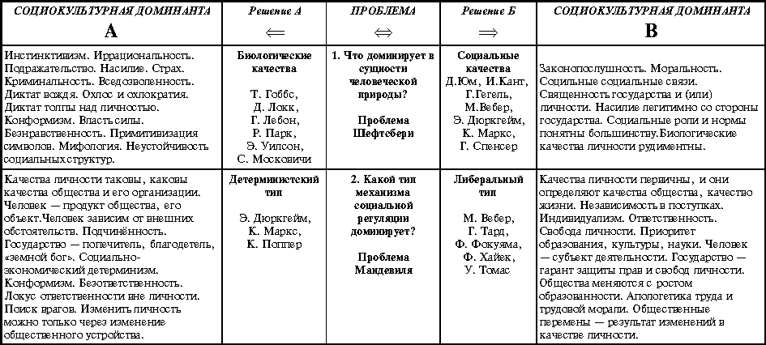 Для социодиагностики общественного состояния предлагается пятимерная система координат. Каждая ось этой системы одновременно является и моделью социологической проблемы (табл. 1). Социологическая проблема — это системное единство двух противоположных (в определённом смысле) социальных миров и теорий, их объясняющих. Социологическая диагностика состоит в оценке распространённости в обществе системы ценностей этих миров, определения ценностей, доминирующих в обществе, объяснения общества с помощью моделей (теорий), адекватных фиксируемым доминантным системам ценностей. В табл. 1 приведены пять систем таких социологических проблем и пять пар социальных миров. Здесь же для каждого из этих миров приведены системы доминирующих ценностей (социокультурные доминанты). Они обозначены как доминанты А и В. Приведены и фамилии авторов теорий, объясняющих общество с данной (А или В) доминирующей системой ценностей.Таблица 1 Характеристика социальных миров. Социокультурные доминанты 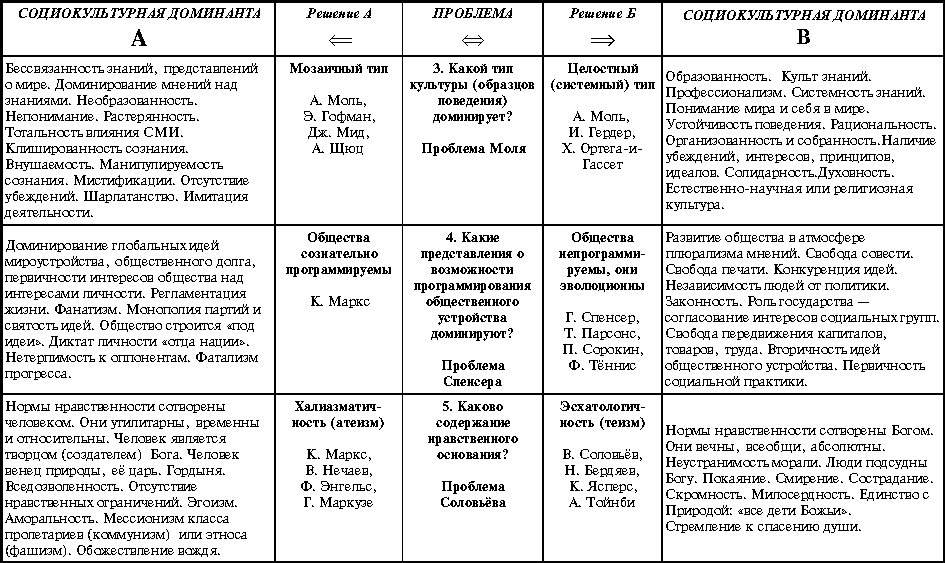 Что же доминирует в России сегодня? К какому социокультурному миру ее можно отнести (*3)? Какими теориями (моделями) можно объяснить (и, следовательно, понять) наше сегодняшнее общественное состояние? 1.1. Проблема Шефтсбери: охлос или демос? Человек — это канат, натянутый между животным и сверхчеловеком, канат над пропастью Ф. Ницше Природа человека всегда вызывала ожесточённые споры. Одни говорили о естественности социальности человека, отмечая рациональность, солидарность, нравственность его природы. Другие твердили о первичности его биологической (животной) природы и полагали, что социальное неестественно человеку, является искусственным образованием. “Мир... создают люди, следовательно, он искусственно созданное образование” (Э. Гоффман). Эта точка зрения сводится к тому, что поведение людей базируется на системе врождённых (безусловных) инстинктов (*4). Инстинктами являются программы поведения людей в обстоятельствах, угрожающих им как биологическому виду. В реализации этих программ разум не участвует. Более того, попытки разума контролировать инстинкты приводят к удручающим результатам. Так, подавление инстинкта собственности в Советском Союзе породило совершенно уникальный тип человека — безответственного и вороватого бездельника. Человеческая эволюция трансформировала инстинкты (через социализацию и мифологию) в традиции. Система традиций — это и есть менталитет человека, социализированная система врождённых программ поведения, реализующих инстинкты. Г. Лебон так объяснял этот механизм: “Силы, создаваемые нашими бессознательными стремлениями, всегда непреодолимы. Разум не знает их, а если б и знал, то ничего не мог бы сделать против них. А между тем эти тёмные и верховные силы и являются настоящими двигателями истории. Человек действует, а они его направляют и часто — совсем наперекор самым очевидным его интересам” (4). Историю делают инстинкты. Разум только её пишет. История, которую знают люди, — это история мифов, порождённых разумом для объяснения человеческого поведения, в основе которого — реализация инстинктов, для придания им социально значимых форм и закрепления их в традициях. Э. Шилз заметил по этому поводу: “Люди зачастую неудовлетворены своими традициями, но без них они не могут выжить” (5). Традиции не обсуждаются. Они принимаются как должное и неизбежное. Они могут меняться, могут создаваться. Неизбежным остаётся их основа, их несущая конструкция — инстинкты.Хорошая традиция лучше хорошего закона. Традиция вообще не нуждается в законе . Закон же, нарушающий традицию (обычай, верование), обречён на неисполнение. Инстинкты можно только признавать, бороться с ними бессмысленно.Эволюция человечества, однако, не только история мифологии, это и история поиска социализированных форм реализации инстинктов. Речь идёт о формах, образцах поведения, культурах, позволяющих реализовывать инстинкты как программы поведения с общественной пользой. Доминантой этих поисков являют законы — “система установленных стандартизованных норм, регулирующих человеческое поведение с целью социального контроля” (6). Вот как об этом пишет Т. Гоббс: “Все люди не только дурны... Они рождаются животными... Естественным состоянием... <их является>... война всех против всех, и во время этой войны у всех есть право на всё... Люди... стремятся выйти из этого несчастного... состояния, но это оказывается возможным лишь в том случае, если они по взаимному соглашению откажутся от ������воего права на всё” (7). Далее Гоббс говорит: “Созданное таким образом единение называется государством или гражданским обществом...” (8). Способность создавать законы, развивающие человеческую природу, а не подавляющие её, во-первых, способность следовать законам и подчиняться им, во-вторых, разделило сообщество людей на два принципиально разных типа: охлос и демос (9). Водораздел между этими типами общественных состояний определяется законопослушностью. Как внешней, реализованной правовым государством, так и внутренней, определяемой системой нравственных норм. Цивилизация — это процесс социализации поведения, обусловленного инстинктами, формирование способов их реализации в культурах. Покорить инстинкты нельзя. Освободиться от их диктата можно, только подчинившись им. Культура задаёт образцы подчинения инстинктам в социологизированных формах поведения. Цивилизация сделала человека. Она есть механизм по утилизации человеческой природы, определяемой могущественными и латентными силами его бессознательного менталитета. Социализация не начинается с нуля при рождении человека. Известен механизм — импринтинг (запечатления) — закрепления в подсознании уже приобретённых человечеством образцов поведения, норм, культур, традиций. Эти нормы и образцы поведения являются результатом предшествующего мучительного поиска цивильных форм канализации инстинктов. Эти формы закрепляются в культуре как социально признаваемые нормы поведения. Механизм передачи таких образцов поведения начинает действовать с младенчества (возможно, ещё со времени беременности матери). Механизм импринтинга передаёт детям освоенные ранее образцы поведения. Окультуривание (социализация) не было лёгким и быстрым. Современный его результат определяется народами, которые этот процесс привёл к правовым, демократическим, высокоразвитым в культурном и экономическом отношениях обществам. В этих обществах доминирует человек “веберовского” типа, для которого характерна установка на индивидуальный успех, дисциплинированность, ответственность, рациональность и законопослушность (10). Главным социализирующим фактором, “инструментом обуздания инстинктов” (по З. Фрейду) такой социализации стала система этических норм протестантизма. Эта этическая система удачно социализировала и мифологизировала инстинкт выживания. Его мифологизация породила традиции либерализма, индивидуализма, прав и свобод личности, ориентации на индивидуальный успех, стремление к первенству. Противоположностью либеральной социализации была траектория, сформировавшая человека “дюркгеймовского” типа, для которого доминирует установка на солидарность: “Солидарность, вытекающая из сходств, имеет свой максимум тогда, когда коллективное сознание точно покрывает всё наше сознание и совпадает с ним... В момент, когда эта солидарность проявляет своё действие, наша личность, можно сказать, исчезает, ибо мы более не мы, а коллективное существо... Повсюду, где есть общество, есть альтруизм, потому, что есть солидарность” (11). Традиции солидарности, альтруизма, коммьюнити, патриотизма основываются на инстинктах защиты рода, родительском инстинкте. Первый тип социализации породил общества, которые К. Поппер назвал открытыми . В противоположность им закрытыми считаются общества коллективистской социализации. К. Поппер был бескомпромиссен, полагая, что эффективным и прогрессивным является движение к открытому обществу: “Чем старательнее мы пытаемся вернуться к героическому веку племенного духа, тем вернее мы в действительности придём к инквизиции, секретной полиции и романтизированному гангстеризму. Начав с подавления разума и истины, нам придётся закончить жестоким и насильственным разрушением всего человеческого... Мы можем вернуться в животное состояние. Однако, если мы хотим остаться людьми, то перед нами только один путь — путь в открытое общество. Мы должны продолжать двигаться в неизвестность, неопределённость и опасность, используя имеющийся у нас разум, чтобы планировать, насколько возможно, нашу безопасность и одновременно нашу свободу” (12).Восхождение к вершинам современной цивилизации было сложным: были жестокие падения в пучину разгула человеческих страстей, бесконтрольности реализации инстинктов (воля вместо социализирущей свободы) и разрушительности их буйства. Войны, революции, диктатуры, преступность — всё это свидетельства выбросов энергии инстинктов, пробивающих броню социального контроля ранее в трудной истории цивилизации и пробивающих её сейчас, в наше прогрессистское время (чего стоят хотя бы примеры Чечни и Косова). Всё это результат неадекватности культуры глубинным силам инстинктов. Однако пути социализации неисповедимы. Они могут приводить и к таким сообществам, в которых социальный контроль над инстинктами или ослаблен, или способствует их самому негативному проявлению, или неадекватен их могущественным устремлениям. Тогда “социальная одежда” рвётся под давлением внутренних сил человеческой природы, являя миру деструктивный, разрушительный в своём неистовстве социальной бесконтрольности тип человека и общества, в которых он воспроизводится. Такие сообщества называются охлосами. Его героями являются толпы дичающих людей. Социальный контроль ослаблен, здесь выше вожди охлоса — бестии, стоящие по ту сторону права и морали. “Дурные сообщества рождают дурные нравы”, — с грустью говорил апостол Павел. Не о таких ли обществах он говорил? Главными признаками человека толпы являются криминальность, безнравственность, неспособность к качественному труду и, главное, луддистское презрение к людям, способным к такому труду. Человек этот несёт в себе роковой заряд разрушения, несозидания. Он — маленький кусочек мирового беспорядка, мировой энтропии, мировой бессмыслицы. Общества, в которых возникает такой тип человека, непременно пройдут через распад неэффективных социальных связей, социальную атомизацию. Если новые механизмы социализации создадут новую социальную оболочку, адекватную инстинктам (ментальности), общества смогут развиваться. Если этого не произойдёт — они погибнут. Общества неэффективной социализации — это охлосы. Системным социальным образованием (общностью) здесь является масса или толпа (как состояние крайней атомизации). Проблема толпы всегда интересовала социологов, философов и психологов (Платон, Г. Лебон, Х. Ортега-и-Гассет, К. Ясперс, С. Московичи, Х. Арендт, Ф. Хайек), и не случайно. Они всегда определяли толпу как символ социальной опасности и нездоровья. Это связано со следующими обстоятельствами. Первое . В охлосах ослаблена или отсутствует власть Закона. Неуважение к Закону и институтам государственной власти является доминантой охлократического поведения. Исследования социологов прошедшего десятилетия фиксируют в России высший уровень криминальности сознания и поведения людей (табл. 2).Таблица 2 Криминализация сознания и поведения людей (в %) (*5)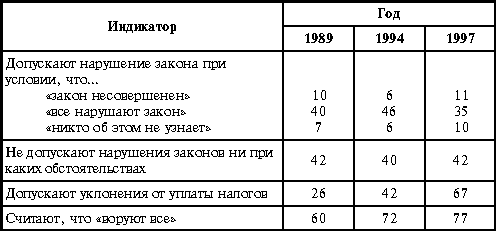 Недоверие и презрение сложившихся в России институтов власти стало всеобщим. В отчёте о мировом развитии (1997), подготовленном Всемирным банком, правительство России названо как правительство, имеющее один из самых низких рейтингов доверия у предпринимателей, работающих в России (13). Доверие народа к федеральным органам власти оценивается 1—5% населения, поддерживающих высшие институты власти в стране. Очевидно, что правовое бескультурье и неуважение к Закону компенсируются в охлосах властью, основанной на силе и реализуемой через насилие. Отрицание силы Закона всегда означало признание закона Силы. Носителями Силы может быть и государство (события октября 1993 г., Чечня), и криминальные структуры, устанавливающие свои порядки в обществе, вытесняя государство из сфер его (и только его) компетенции. Это обусловливает рост преступности. Её масштабы определяются не иначе, как разгул преступности, “беспредел”. В России уровень преступности составил в 1995 г. 6 000 преступлений на 100 тыс. населения, в том числе 30,4 убийства (в США — 9,9 убийств, Японии — 0,7 убийств). Считается (эксперты ООН), что критическим уровнем преступности является уровень 5 000 случаев на 100 тыс. населения (14). Преступность, уровень которой выше этого порога, возможна уже в криминальных обществах, неспособных подавить её силами государственного правопорядка. Более того, при этом наблюдается криминализация и самого государства, его властных институтов. Международная неправительственная организация “Транспаренси интернейшнл” (Берлин) опубликовала “Список честности государств” за 1998 г. В нём приведены оценки честности чиновников 85 государств мира, которые составлены по результатам опроса бизнесменов, работающих в оцениваемой стране. В этом списке Россия занимает совершенно непочётное 76-е место. Более вороватые чиновники живут, к примеру, в Гондурасе, Парагвае и Камеруне (15). Взяточничество и коррупция государственного аппарата — это следствие криминализации общества и его институтов, в частности экономики. Эксперты считают, что 40—60 % российского ВВП производится в “теневой” экономике, криминальной по определению: здесь потребляются общественные ресурсы, отсюда нет поступления налогов, там просто не существует законов государства. Бессилие Закона осознают и российские власти. Вот откровения бывшего вице-премьера и в недавнем прошлом бывшего главного мытаря страны Б. Фёдорова: “В России уклонение от налогов составляет 90 % того, что можно было бы собрать, а по подоходному налогу может быть и выше” (16). Это факт уже массовой криминализации. Исследование госслужащих и представителей региональных элит, выполненное В. Бойковым в 1999 г., оценивает уровень исполнения федеральных Законов в области экономической деятельности на 14—16 % (столько процентов чиновников различных уровней считают, что эти законы в основном исполняются), а в области социальных прав — на 6—10 %. При этом 90 % госслужащих и представителей политической элиты заявляют, что федеральные институты исполнительной власти утратили контроль за положением дел в стране (17). Второе . В охлократическом обществе снижены ценности морали, нравственности. Различия в понимании добра и зла размыты. Это естественно, ибо охлос и личность несовместимы, а следовательно, нет и не может быть личной ответственности и личного выбора. В толпе действует другой моральный императив: индивид освобождается от какой-либо ответственности, что делает любые поступки человека аморальными.“Вот в том-то и ужас, что у нас можно сделать самый пакостный и мерзкий поступок, не будучи вовсе иногда мерзавцем. В возможности считать себя, и даже иногда почти в самом деле быть немерзавцем, делая явную и бесспорную мерзость, — вот в чём наша современная беда” (18), — полагал Ф.М. Достоевский, с тревогой замечая активность охлократических бесов. Насилие и власть силы всегда безнравственны. Добром считается только то, что соответствует интересам обладателей власти и силы. Охлократическое сознание воспринимает за добро только то, что соответствует настроению и инстинкту толпы. Поверили же на заре горбачёвских реформ в то, что нравственно всё, что экономически эффективно. Проблемы нравственности в обществе тотальной аморальности всегда неинтересны, периферийны. Многолетние исследования ВЦИОМа фиксируют интерес к проблеме нравственности только у 10—14 % населения страны... Третье . Для охлосов естественным является состояние аномии. Это означает, что социальные регуляторы ослаблены, социальные связи ситуативны, неустойчивы. Человек изолирован и отчуждён от нормальных социальных взаимодействий. Социальные установки и интересы неотрефлексированы и легко сменяемы. Очевидно, это позволяет легко манипулировать толпой. Аномичность предполагает непонимание происходящего (“когнитивный вакуум” (19), по определению Г. Дилигенского), растерянность и массовую дезадаптацию, озлобленность и повышенную агрессивность (табл. 3), мифологичность сознания. Охлосы — это системы с перевёрнутой шкалой ценностей, системы оруэлловской мифологии. Об этом в стародавние времена говорил Платон: “Они... с бесчестием, как изгнанницу, вытолкнут вон стыдливость, обозвав её глупостью, а рассудительность назовут недостатком мужества и выбросят её, закидав грязью. В убеждении, что умеренность и порядок в расходовании средств — это деревенское невежество и черта неизменная, они удалят их из своих пределов, опираясь на множество бесполезных прихотей... Опорожнив и очистив душу... они низведут туда наглость, разнузданность и распутство... Наглость они будут называть просвещённостью, бесстыдство — мужеством, разнузданность — свободою, распутство — великолепием” (20).Таблица 3 Потенциал протеста (в %) (*6)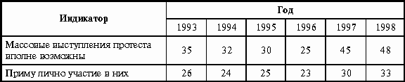 Так и у нас: война — это наведение конституционного порядка, взятка — это гонорар, бескультурье — это приобщение к мировой цивилизации, безработица — это свобода, нищета и дискриминация — это демократия. Расплывчатость в различении добра и зла — всё это признаки одичания человека, скатывания его в стадное состояние охлократии. Там, где нет христианских критериев, различающих и в словах, и в делах добро и зло, там, где человек “потерял духовность и высшую идею свою”, и, следовательно, по Ф.М. Достоевскому, “может быть, даже просто не существует”, там, где поведение людей определяется буйством их страстей, а не разумом и знаниями, — там всегда владычествует охлос. “Я их всех сосчитал, — откровенничает Пётр Верховенский в “Бесах” — учитель, смеющийся с детьми над их Богом и над их колыбелью, уже наш. Школьники, убивающие мужика, чтобы испытать ощущения, наши... Прокурор, трепещущий в суде, что он недостаточно либерален, наш, наш. Администраторы, литераторы, о, наших много, ужасно много, и сами того не знают” (21). Так сбивалась толпа... Четвёртое . Охлосы не могут жить без своего лидера, без вождя. Герои-вожди и охлосы неразделимы. Охлос не может обойтись без вождя, поскольку не способен осознать и выразить свои настроения, интересы и решиться на какие-либо действия. Охлос слепо и безоглядно верит в своего вождя и боготворит его. Однако охлосы столь же легко сбрасывают с пьедестала своих кумиров, как и создают их. Чем сильнее любовь и ожидание чудес от своих вождей, тем сильнее ненависть и презрение к бывшим кумирам, не оправдавшим надежд охлоса. “Акела промахнулся!” — этот приговор вынесен блистательному Горбачёву, его сподвижникам — прорабам перестройки, как только ослабла его власть. “Акела промахнулся!” — и вот в 1998 г. 62 % российских граждан требуют отставки Ельцина. (Напомним, что на выборах 1992 г. Ельцин стал президентом, набрав 64 % голосов, а в сентябре 1998 г. только 1,6 % граждан назвали Ельцина политиком, вызывающим доверие.) (22) Охлос снова растерян. Он ищет нового вождя: старых лидеров-кумиров ненавидит, нового ждёт (52 % граждан в январе 1998 г. связывали выход из кризиса с приходом “сильного” человека). Влияние вождя в охлосах огромно. Невольно это осознают и наши политологи: их обзоры политического “огорода” являются блестящими образцами героического детерминизма. Историю в России делают Герои. Народ, как всегда, безмолвствует. Да он, по большому счёту, и не интересует наших политологов. Горе стране, которая нуждается в Герое. Горе и тогда, когда в стране нет Героя...Крайне опасной тенденцией является дробление охлоса на группировки. Федерального вождя в стране нет. Усиливается влияние региональных лидеров — они становятся предводителями. Это означает, что судьбу страны сегодня вновь решает не народ, а группа региональных вождей: если они в очередной раз где-нибудь в бане решат разделить Россию, она будет разделена... После Беловежских соглашений люди долго не могли понять, в чём разница между СССР и СНГ. А когда поняли, было уже поздно что-либо менять. Впрочем, возможно и объединение лидеров. Они могут составить решительную оппозицию федеральному центру, создав свои системы федеральной власти. Для этого нужно, чтобы региональные элиты стали ответственными элитами. Естественным режимом власти в охлосах являются диктатуры или олигархии. Олигархия — это режим приватизации государства, когда из общественного института оно становится частным делом (своего рода акционерным обществом, учреждённым олигархами) вождей. Люди в этом случае перестают быть гражданами. Они становятся подданными. С необходимостью установления диктатуры как единственного способа п��е��доления кризиса согласны 40 % граждан, категорически против — 32 %. В то же время только 9 % жителей страны — за демократию, а 80 % — за порядок, отвечая на вопрос о том, что сегодня важнее для России: порядок или демократия (23). Охлос ждёт вождя, ему в тягость свобода, ему хочется назад, в понятное ему закрытое общество Союза (в 1997 г. “за” были 29 %, а в 1999 г. уже 54 % хотели бы вернуться во времена “дорогого Леонида Ильича”) (24). Охлосы и демосы — это два мира, две культуры, два результата социализации, окультуривания биологической энергетики человека. Эти культуры есть в любом обществе. Вопрос стоит в определении их соотношения. Приведу самые осторожные оценки российской драмы. По-видимому, носители культуры демоса составляют 40—45 % населения. Для них недопустима криминальность, они честно работают, у них прослеживается система интересов, они расчитывают на свои силы и не надеятся на “отцов-командиров”. Охлос представлен 35—40 % населения: слепая, непонимающая масса опустошённого и разуверившегося народа... Промежуточный слой в 15—25 % — это часть населения, у которой есть признаки и охлоса, и демоса. Будут ли они подниматься к демосу или скатятся в пучину охлоса? Куда пойдут они, такой и будет Россия. 1.2. Проблема Мандевиля: либералы или детерминисты? В человеке заключены источники всех наших проблем... И в нём же основы всех наших надежд. А. Печчеи Вот уже почти 300 лет эпатажная работа Б. де Мандевиля “Басня о пчёлах” о природе нравственности вызывает ожесточённые споры. В самом деле, являются ли человеческие качества (включая, естественно, и нравственность) следствием социальных условий жизни людей или всё обстоит наоборот — социальные условия являются следствием человеческих качеств? Первая точка зрения (позиция детерминизма) сводится к жёсткой логике К. Маркса, в которой личность — это продукт общественных отношений. С Марксом солидарен и К. Поппер: “Люди не столько творят свою социальную жизнь, сколько являются её продуктами” (25). Вторая точка зрения определяет позицию либерализма и является противоположной материалистическому детерминизму (26). В ней системообразующим является тезис об изменениях социальной организации через изменения человека, его верований, этики, “духа” (по определению М. Вебера и В. Зомбарта). Доктринальные установки детерминизма и либерализма являются отражением сложившихся социальных укладов, культур. Либерализм — это результат социализации этносов, у которых в менталитете доминирует инстинкт самосохранения, выживания. Итогом этой социализации явился трудолюбивый, деятельный, эгоистичный и способный отвечать за себя человек. Центральным элементом культуры либерализма являются гарантии прав и свобод личности. Детерминизм же является культурой, в которой социализирован инстинкт выживания рода. Это означает формирование культуры, в которой над индивидуальным поведением доминируют требования общностей, институтов, общества в целом. Человек здесь зависим от социальной организации, он несвободен в своём выборе, он — объект воздействия социальных демонов (экономики, политики, государства). Человек детерминистской культуры — это общинник, коллективист, для него важно служение общему делу, общественному долгу. Одновременно с этим — это человек с ослабленной инициативой, конформист, для него важно быть “как все”, нельзя “высовываться”, он подражатель, консерватор, но не инноватор. В детерминистическом мире естественно подвижничество ради общего (желательно, вселенского) счастья, самопожертвование и мессианство. Чем более грандиозной выдвигается цель сотворения будущего счастливого общества, тем больший энтузиазм испытывает детерминистский человек, тем сильнее желания радикальных реформ, революций. Здесь мифология будущего ценнее реальностей настоящего. Грандиозность замысла ценится выше способностей к конкретной работе над конкретной задачей. Детерминист угасает, когда с ним говорят о задачах реальных: они для него мелки, ничтожны. Всегда легче хотеть сделать счастливым всё человечество, чем сделать счастливым хотя бы одного, но конкретного человека... Локус ответственности у детерминистов смещён за пределы личной ответственности: в их неудачах всегда виноваты другие (генсеки, президенты, коммунисты, бюрократы, евреи, “лица кавказской национальности”, НАТО...) Коммунистическая доктрина Маркса могла произрасти как реальность, а не теория только в странах с выраженной детерминистской культурой (*7). В либеральных культурах марксизм трансформировался в более мягкую идеологию социал-демакратии. Культура детерминизма — это доминирующая культура российского общества. В табл. 4 приведены оценки социологов, связанных с измерениями распространённости ценностей либерализма и детерминизма в России. Таблица 4 Распространённость ценностей либерализма и детерминизма 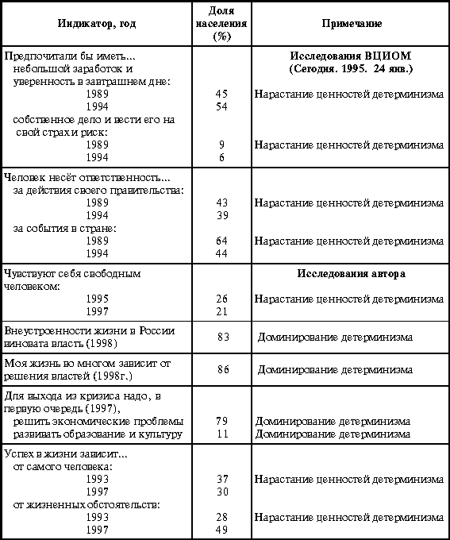 К данным табл. 4 приведём ещё два факта. По данным “Фонда наследия”, Россия в 1998 г. заняла 106—110-е место по уровню экономической свободы в списке из 161 страны мира (27). По данным А. Андриенковой (28), Россия является самой материалистической страной из 17 стран Европы: в ней абсолютными доминантами являются ценности детерминизма. Исследование фиксирует наличие в России группы “чистых детерминистов” (21 %) и “чистых либералов” (0,01 %). Так и живём, как учили: по-материалистически. Это означает — живём несвободно, зависимо, завистливо, бедно. Известно, что чем больше в стране либерализма, тем она богаче; чем больше материалистического детерминизма, тем она беднее (29). Попытки либерализации страны, не затрагивающие человека, бессмысленны и разрушительны. Либерализация для охлоса — это разгул вседозволенности и анархии. Либерализм нельзя навязать. Он может только вызреть как новая культура, результат нового механизма социализации. Права человека нельзя дать. Нельзя одарить людей свободой. Когда-то об этом предупреждал А.И. Герцен. Уж более 100 лет прошло, как он завещал: “Нельзя людей освобождать в наружной жизни больше, чем внутри...” (30). В детерминистской культуре свобода становится не собственным состоянием, а средством навязывания другим своей воли. В самом деле, в России любят разговоры о правах человека, не замечая 14-миллионную бездну социального дна. Популярны сетования о жестокостях репрессий целых народов в период правления Сталина. В то же время война в Чечне вызывает восторг и одобрение. Нет, власть не стыдится своей защиты прав чеченского народа. Ведутся разговоры о предоставлении больших прав и свободы творчества интеллигенции, и одновременно её унижают нищетой и презрением национальной культуры. Детерминист может защищать права человека, вначале убив его. В России абсолютные права имеют только мёртвые. Живые же имеют столько прав, сколько им разрешает иметь государство, их вождь, их начальник, их участковый милиционер, их местный дворовый хулиган или околоточный мафиози. Не спеши упрекать своё Отечество в неблагодарности. Не спеши гневно обличать наши порядки и нравы проживающих здесь народов.Россия — это то, что мы сами и есть. Она, наша Родина, такая, какие мы. Будет же она такой, какими мы воспитаем и обучим своих детей. В том, что наша страна тяжело больна, повинны мы сами: это мы являемся не только носителями её болезней, мы и есть её болезнь, её социальный вирус. Это мы плохо учились, были ленивы, недеятельны, молчаливо сносили хамство и несправедливость. Это мы пьянствуем на деньги Всемирного банка, проедаем миллиардные кредиты и не думаем об эффективной работе.Мы и есть Россия. 1.3. Проблема Моля: мозаичная или системная культура? Для тех, кто до этого учился жить не по лжи, сегодня важнее знать, как во лжи жить? М. Гафтер Французский социолог А. Моль лет 25 назад обнаружил, что средства массовой коммуникации стали тотально воздействовать на человека. Последствием этого массированного воздействия стала мозаичная культура, в которой “...знания складываются из разрозненных обрывков, связанных простыми, чисто случайными отношениями близости по времени усвоения, по созвучию или ассоциации идей. Эти обрывки не образуют структуры, но они обладают силой сцепления, которая не хуже старых логических связей придаёт “экрану знаний” определённую плотность, компактность” (31). Моделью мозаичной культуры (“экраном знаний”) является комок войлока (вата), в котором масса разнообразных волокон (знаний) сцеплена совершенно случайным образом. Противоположным типом культуры, по мнению А. Моля, является гуманистическая культура. Назовём этот тип культуры системным. Системная культура — это культура не столько образованного, сколько понимающего человека. Это означает способного оперировать известными моделями или создавать свои объясняющие реальность модели. Очевидно, что это означает построение логических цепей, связывающих наблюдаемые явления в сеть причинно-следственных связей. Системная культура может быть основана на естественно-научных или на религиозных моделях, объясняющих мир, общество и человека. Знания вне системной культуры или бесполезны, или вредны. “От многих знаний многие печали” — сказано в Екклезиасте. Знания позитивны настолько, насколько они прибавляют понимание. Мозаичная культура, как следует из её “войлочного” образа, — это бесполезная смесь случайных элементов, фактов. Эта смесь несистемна, нецелостна. В ней нет точки отчёта, нет причины, как нет и следствия. Это смесь, составленная из обрывков различных знаний, взятых из различных областей, в разное время и из различных источников (обрывки из школьных учебников, газет, телевидения, слухов, советов авторитетных людей). Мозаичная культура основана на мнениях о знаниях, но не на самих знаниях. В ней нет и не может быть обобщений, синтеза. Она продуцирует только артефакты, мифы, слухи, нелепости и бессмыслицу. Вообще, мозаичная культура — это культура разрушения и усиление энтропии. Важнейшими свойствами мозаичной культуры являются следующие: 1. Это усиление безнравственности , поскольку в ней невозможна постановка проблемы выбора. В самом деле, выбор предполагает основание выбора, которого в мозаичной культуре нет. Он может быть только в системной культуре (или естественно-научный принцип рационального выбора, или выбор по совести, по вере в религиозной культуре). Электоральная кампания 1996 г. свелась очередной раз к банальному оправданию мозаичной культуры, предполагавшему выбор из двух зол меньшего. Электорат Ельцина на 80 % проголосовал за него из этих соображений, и только 7 % поступили нравственно, проголосовав и против Ельцина и против Зюганова во 2-м туре выборов. Добро и зло размыты в мозаичной культуре. Поэтому таким эффективным оказалось: “Голосуй сердцем”. Человек мозаичной культуры не в состоянии голосовать головой. 2. Это массокульт, это культура попсы. В ней слухи важнее и эффективнее достоверных сведений, контекст важнее текста. Интерпретации, комментарии, объяснения своих людей, своих источников информации важнее и авторитетнее первоисточников, которыми в мозаичной культуре никто не интересуется. В президентской гонке 1996 г. только 6 % избирателей интересовались программами кандидатов, остальные ориентировались на комментарии дикторов телевидения, журналистов, авторитетных людей. В 1997 г. 56 % людей считали себя религиозными, но только 7 % знали правила, обряды, нормы религиозного поведения, только 15% смогли прочитать Библию (среди лиц христианской веры). Основа их сведений прежняя: газеты, слухи, советы, телевидение... К самостоятельному умственному труду, духовной работе человек мозаичной культуры не способен. Лидером мозаичной попсы может быть только человек, способный стать для неё “своим”. Дело в том, что мозаичная культура — это культура толпы, которая “ничего не знает и ничего не хочет, она лишена содержания и служит орудием того, кто льстит её ...влечениям и страстям” (32). Вот откровения одного из вождей современной попсы В. Жириновского: “Я способен говорить на их языке, потому что я вырос в такой же среде... Я не составляю речей и никто не составляет их для меня. Людям нравится, когда с ними разговаривают... Я ничего не читал... Я говорю открыто об их проблемах... Я называю виновников их несчастий... Их нужно обманывать, говорить им не то, что ты хочешь сказать, а то, что они хотят услышать. Я перенёс этот подход в политику и достиг огромного успеха... Враждебность увеличивает нашу силу. Мои обращения к людям были гораздо лучше, когда они были враждебны... Нам нужны совершенно особые действия, чтобы управлять страной. Если вы оторвёте лидера от этой страны, то на Западе он будет выглядеть ненормальным. Но верните его в эту больную, ненормальную страну — и будет гармония” (33). Анализируя прошедшие в 1996 г. президентские выборы, политолог С. Кара-Мурза отмечает способность Б. Ельцина “быть своим”: “Кто же... поддержал Ельцина?.. Поддержали... те, в ком взыграло... антицивилизационное коллективное бессознательное... <оно> вырвалось своей неожиданной стороной и подавило разум... Бессвязная, рваная, полная тёмных эмоций речь Ельцина близка <им> и привлекательна. Нельзя сказать понятна — ибо она воспринимается не разумом, а подсознанием” (34). 3. Это культура “современного человека”. Современным назовём такого человека, который всегда придерживается “правильной” точки зрения. Таковой же является точка зрения вождя и, что очевидно в охлосах, точка зрения большинства. Особенно ярко это свойство прослеживается при изучении поведения современной элиты. За короткое время она удивительным образом пережила целый цикл трансформаций: комсомольцы сталинского призыва ® шестидесятники хрущёвской оттепели ® авангард строительства развитого социализма брежневской эпохи ® прорабы горбачёвской перестройки ® демократы ® антикоммунисты ельцинских реформ... Для таких трансформаций нужно обладать поистине незаурядными свойствами: а) не иметь собственных убеждений (они, собственные, опасны); б) уметь быстро поменять прежние убеждения на новые (это всегда происходит с выгодой для себя), заявляя: “Мы живём в новой стране!”. Да и сегодня происходит изменение политики, причем на удивление легко: “новые песни о главном” поют, увы, старые певцы... Главное — быть всегда на первых рубежах, и не так важно, что это за рубежи; в) быть мистификатором, что, по-простому, означает умение врать и при этом, желательно, не краснеть. (Все сегодняшние политические лидеры — от бывших членов политбюро и сотрудников редакции элитарного “Коммуниста” до доцентов кафедр научного коммунизма и певцов коммунистических шлягеров, оказывается, как они сегодня заявляют, всё время боролись в Советском Союзе с коммунистической идеологией.) Эти качества российской элиты (“образованщины” по А.И. Солженицыну) выпестованы были десятилетиями “двоемыслия”, ставшего “устойчивым жизненным приёмом...”. “Образованщина повседневно добросовестно, а иногда талантливо трудится для укрепления общей тюрьмы. И этого она не разрешит поставить себе в вину... Даже предположения о какой бы то ни было вине перед народом за прошлое или за нынешнее... не возникает ни у кого из певцов образованщины... Тут они все едины..: “Народу самому неплохо было бы ощутить свою вину”” (35). Люди же на ложь своих духовных пастырей отвечают нелюбовью к ним. В исследовании поведения отечественной интеллигенции выявлено три группы населения: “антиинтеллигенты” с выраженной враждебностью к деятельности интеллигенции (18 %), “неинтеллигенты” с выраженной позицией безразличия к роли интеллигенции (65 %) и “интеллигенты”, являющиеся её почитателями (17 %) (36). Вообще, мистификации — это свойство мозаичной культуры. Вот результат, полученный социологами фонда “Общественное мнения” в 1995 г.: 78 % россиян лгут (с той или иной степенью частоты), и только 22 % заявили, что никогда и ни при каких обстоятельствах не лгут (37). Мудрый А. Солженицын, ещё в 1974 г., выв��л правило общественного спасения: “Не лгать!... Не участвовать во лжи! Не поддерживать ложь!.. Если они <молодёжь>... не построят честного общества, то не увидят его никогда” (38). 4. Это идеальная среда для манипуляций. В самом деле, если мозаичная культура принципиально несистемна и представлена неустойчивым набором несвязанных между собой знаний, слухов, верований, мифов, то здесь любой новый элемент свободно и безболезненно входит в бессистемный набор культурогем, как, впрочем, и любой прежний может быть или забыт, или вычеркнут вовсе, или странным образом присоединён к новым “современным” элементам. В мозаичной культуре напрочь отсутствует суждение Вовенарга о том, что “легче сказать новое слово, чем примерить меж собой слова, уже сказанные” (39). Человеку мозаичной культуры, размышляет Зомбарт, “его полуобразование облегчает... веру в летучее слово, горячую фразу... Его точка зрения в политике будет радикальной... К этому ведёт его беспочвенность. Доктринаризм представляет арену для всяких фантазёров... демагогов...” (40). В современном мире, во многом формируемом средствами массовых коммуникаций, стали доминировать люди, владеющие методами работы с людьми, а не с вещами. Это одновременно означает, что вещами становятся люди. Они всё больше становятся зависимы от социального технолога и всё больше нуждаются в нём. Люди стали не только объектами манипуляций, но и их продуктами. В России это проявляет себя в тотальной растерянности, ужасающем пессимизме по отношению к будущему, дезадаптации, непонимании происходящего. На этой почве эффективны компании откровенного надувательства, связанные с коммерческими проектами (ваучеры, МММ, “Тибет”, “Властелина”, “Русский дом селенга”, “Чара”, “Гермес” — надо ли продолжать?) и политическими электоральными “промываниями мозгов”. Приведу пример электоральной кампании Ельцина. В феврале 1996 г., объявив о своём участии в предстоящих выборах, он имел поддержку электората в 5—7%. Это были очень слабые стартовые позиции. Социальные технологии избирательных манипуляций были запущены, став тотальной системой производства мифов, брэндов, как бы нового Ельцина. Результат не замедлил сказаться: в первом туре за Ельцина проголосовали почти 25 % электората, а во втором — почти 38 %. Однако манипулятивные технологии не могут дать устойчивого результата: уже в октябре социологические службы фиксировали рейтинг Ельцина на уровне довыборных 5—7 %, а в последнее время он не дотягивает и до 2 %. В мозаичной культуре манипулятивное воздействие должно быть постоянным и тотальным. Только этим достигается устойчивый результат. Но он никогда не бывает продолжительным: нельзя обманывать народ постоянно. Известный философ и социолог А.А. Зиновьев так оценил итог избирательной кампании Ельцина: “Русский народ сам добровольно избрал... наихудший вариант дальнейшей эволюции России... Он сделал это сам” (41). Такова политическая цена мозаичной культуры, культуры непонимания и искреннего желания быть обманутым. 5. Это культура распада, энтропии, деградации. Носители такой культуры были всегда. Есть они не только в России. Однако заметными и массовыми они стали в последнее время, когда системы образования перестали справляться со своими социальными функциями. Как писал Х. Ортега-и-Гассет, на арене истории главным действующим лицом стал средний, заурядный человек. Герои исчезли, остался хор (42). Системы образования являются своеобразными системами социальной иммунной защиты общества от культурной энтропии. Если системы образования ослаблены, то общества гибнут от разгула бескультурья, социального синдрома иммунодефицита, социального СПИДа. Это не фантастика. В России произошли серьёзные трансформации в системе образования: оно теряет свои системные свойства, оно недоступно широким слоям населения, оно снижает масштабы и качество обучения. Так, по относительной численности студентов, рассчитываемой на 10 тыс. населения, наша страна переместилась с 3-го на 26-е место в мире с 1971 по 1996 г. С 1984 по 1994 гг. уровень образованности, исчисляемый средним количеством лет обучения для населения старше 15 лет, сократился с 10,4 лет до 9,6 лет (в США на сегодняшний день 11,7 лет). Сегодня в школу не ходят до 20 % детей школьного возраста. Почти в 2 раза (с 9 млн до 5,6 млн) сократилось с 1990 г. число детей, посещающих дошкольные учреждения. В стране, как в послевоенные годы, массовыми явлениями стали беспризорщина и безнадзорность детей: их около 3 млн (43). Если сегодня образование серое, завтра чёрным станет всё общество, не так ли? В России мозаичная культура проявляется в распространении образцов поведения лагерей, культуры зоны. Когда А. Солженицын написал “Архипелаг ГУЛАГ”, мы думали, это роман о прошлом. Оказалось — о будущем: “Всё, что рождается самого заразного в Архипелаге — в людских отношениях, нравах, взглядах и языке... расходится по всей стране... И когда лагерные выражения звенят в коридорах... МГУ или столичная <...> женщина выносит вполне лагерное суждение о сути жизни — не удивляйтесь... Лагерная хватка, жёсткость людских отношений, броня бесчувствия на сердце, враждебность всякой добросовестной работе...” (44). Мат в России стал лексической нормой. Авторы некоторых статей призывают к его легализации. Вот, к примеру, результат оценки студенческого поведения (как ранее говорили — передового отряда молодёжи): если в 1989 г. 46 % студентов допускали употребление мата, то в 1997 г. не считают зазорным употреблять крепкое словцо 71 % студентов (45). Да что там студенты: мат звучит со сцены театров, в телерадиопередачах, политических выступлениях нынешних вождей, в рекламных продуктах. Мозаичная культура является культурой охлоса. В толпе можно всё. Язык только фиксирует разнузданность и слабость социальных и нравственных вериг. Матом не ругаются, на нем разговаривают. Пришли времена, о которых говорят: “Сегодня стыдно не быть бесстыдным”. Мат — это язык охлоса, представленного социальными маргиналами: опустившимися интеллигентами, спившимися пролетариями, торгующим жлобьём, эпатирующими политиками, приблатнёнными журналистами, циничным ворьём. Лагерная феня, блатные песни, мат свидетельствуют об эрозии культуры вообще, примитивизации социальных связей: здесь “так же, как у первобытного человека, с трудом подавляются импульсы, задерживающие центры работают крайне слабо...” (46). С такой оценкой, данной нравственным проповедником современной России Д.С. Лихачёвым, придётся согласиться. Когда-то зона была вокруг нас, ныне она уже в нас, и мы сами являемся одновременно её заключёнными и охранниками. 6. Это примитивизация и разрушение национальной культуры. Национальное является естественной чертой любого народа. Естественность определяется в системе традиции, культуры, верований, выражающих глубинное основание природы того или иного народа. Таковым основанием является система инстинктов и интенсивностей их проявления. Она приводит к разным результатам их социализации, выраженными разными национальными культурами. Национальная самобытность естественна: естественны чувство гордости за свою нацию, признание таких же чувств за представителями других наций, стремление жить среди людей своей национальности, не унижать другие нации и не допускать унижения своей. Национальная самобытность — это результат естественной социализации и мифологизации в культуре системы инстинктов этноса. Национальная самобытность социальна (*8). Разрушение или ослабление национальных уз опасно для общества. Как только крепь национальной культуры ослабевает, подтачиваются узы социальных и нравственных норм, слабеет демос. Тут же вырываются на поверхность несоциализированные силы инстинктивного толпотворения: они всегда принимают форму примитивных правил различения своих и чужих, друзей и врагов, тех, кто против нас, и тех, кто за. Самыми сильными такими правилами являются правила этнической идентичности. Можно обнаружить две формы реакции на разрушение национальной культуры — интернационализм и нацизм. Интернационализм связан с отрицанием национальных культур вообще, в том числе и своей родной культуры. Более того, культура “родных палестин” в интернационализме всегда представляется ущербной, презираемой, недостойной современного человека. Это позиция самоуничижения, стыда от национальной принадлежности. Поэтому-то интернационализм тотально внекультурен, внесоциален (*9). Нацизм является внекультурной, внесоциальной формой поведения охлоса. Он есть реакция на разру��ение социализирующей национальной самобытности. Нацизм примитивен как примитивен охлос и обеспечивающая его мозаичная культура. Он основывается на мозаике простых (поэтому-то и принимаемых охлосом) клише: этническая самоиденфикация, мы — лучшие, мы — жертвы происка этнических врагов, их надо или приструнить, или уничтожить. Нацизм, что очевидно, является реакцией разрушения социальных форм организации жизни. Следовательно, он является реакцией на разрушение национальной самобытности, уничтожение национального достоинства, национальной гордости. Нацизм — это следствие тотальной маргинализации общества. В самом деле, “маргинал, — как считает французский социолог А. Фарж, — он калека среди себе подобных — человек с отсеченными корнями, рассечённый на куски в самом сердце родной культуры, родной среды” (47). В России русским неуютно. Неуютно и другим нациям, проживающим в стране. Безответны действия российских властей, равнодушных к русофобским акциям в бывших республиках СССР (Латвии, Казахстане, Эстонии, на Украине, к примеру). Тема русских неинтересна российским политикам. Судьба оставшейся за пределами России 20-миллионной общины русских им безразлична. Политического капитала здесь не приобретёшь. На этом фоне куда эффектнее реакция на происходящее в Югославии. Вот и саратовский губернатор засуетился: готов принять сербских беженцев (48). Это куда выигрышнее, чем принимать наших соотечественников из бывших союзных республик, поволжских немцев... Премьер-министр Израиля с гордостью заявляет, что он сионист. И это правильно — какой же еврей не сионист-националист? На этом фоне заявления российского президента, что он россиянин, вызывают недоумение. Ф.М. Достоевский однажды обронил: “Вот где начало зла: в... вековом национальном подавлении в себе всякой независимости мысли, в понятии о сане европейца под непременным условием неуважения к самому себе как к русскому человеку” (49). Любые слова в защиту русских вызывают истерику о русском держиморде, русском фашизме. Русским становится стыдно быть русскими (*10). Русофобия стала естественной, на неё даже не обращают внимание. Кого возмутило интервью господина А. Коха (50)? Так, пошумели только. Стерпели, не впервой поди. Нацизм — это реакция униженного и оскорблённого народа на социальную несправедливость, унижение и разрушение национальной культуры. Нацизм в России создаётся и политикой ведущих держав мира. Их поведение в России — это поведение победителей в побеждённой стране. России нужна не унижающая её гуманитарная помощь, а сотрудничество, не умаляющее достоинство великого народа. В ответ же нас изгоняют с отвоёванных рынков, пресекают попытки защиты внутреннего рынка от импорта. Чем больше Запад так нам “помогает”, тем сильнее в России будет нацизм, тем больше Россия будет напоминать Веймарскую Германию (51). Нацизм — это реакция на эгоизм Запада. Вообще, проблема России — это проблема не только России, но и всего мира. От решения её зависит облик мира третьего тысячелетия: это будет или враждебный и агрессивный мир, или мир гуманного и цивилизованного сообщества народов. Пока ясно другое — мировые державы не считают Россию своим партнёром и пытаются нажиться на её бедах. Русская культура переживает тяжёлые времена. Вестернизация стала тотальной. И язык непонятен, и литература, и кино, и телевидение всё больше “про то, как у них”, демонстрируются низкопробные образцы мозаичности: насилие, секс, жестокость... Нацизм — это реакция на вестернизацию, разрушающую национальную культуру (*11). Пропагандистская кампания вокруг русского фашизма спекулятивна. В 1990—1992 гг. была проведена серия исследований по проблеме положения русских (52). Установлено, что 70-летний эксперимент по сотворению “советского человека”, лишённого национальности, удался: в России русскими можно считать не более 30 % этнических русских (они знают историю, культуру, традиции и верования русского народа). Остальные русские и не русские вовсе. Они уже денационализированы и, следовательно, асоциализированы. Замечание Гоголя о том, что велико незнание России посреди России, приобретает зловещий характер. Последнее десятилетие (90-е годы) только усилило денационализацию русских. В этом факте — трагедия русского народа, оторванного от своих истоков, национальных корней. Помните, у Ю. Лапшина: Страж у крыльца, И на дверях приманка: “Последний русский, Вход — четыре франка...” Русские националисты не приемлют идеологию нацизма. Как, впрочем, и любые другие националисты. Так, в 1996 г. среди москвичей — русских националистов испытывали неприязнь к евреям 6 %, “лицам кавказской национальности” — 18 %. Среди денационализированных этнических русских антисемитов 27 %, а антикавказские настроения характерны для 41 % людей (1992 г.). По данным ВЦИОМа (1998 г.), 34 % граждан России считали, что антисемитизм довольно широко и очень широко распространён в России (53). Нацизм в России не русский вовсе. Нацизм вообще вненационален. Нацизм — это культура биологизированного охлоса, демонстрирующего асоциальные образцы мозаичной культуры. Чем меньше в народе национализма, тем больше нацизма. Нацизм излечивается развитием национальной культуры. Нет в мире народов с патологической неприязнью к другим народам. Если эта неприязнь прорывается, то только как результат денационализации, охлократического взрыва, разрушающего демос и его культуру. 1.4. Проблема Спенсера: революция или эволюция? Революция суть худший способ улучшения... условий жизни... На словах обещается реализация величайших ценностей, на деле же... Достигаются совершенно иные результаты... Вот почему на революционный призыв я отвечу словами Христа из Евангелия: “Да минует меня чаша сия!” П. Сорокин Одна из самых драматичных социальных проблем — это проблема будущего и способности людей к его сознательному обустройству. Одни (К. Маркс, Ф. Энгельс, Г.В. Плеханов, В.И. Ленин) считали, что будущее сознательно (по плану) созидается. Это позиция программируемого общества, сотворяемого под определённую модель, под идею. Для этого необходимы и естественны революции как социальные бульдозеры, расчищающие строительные площадки для строительства нового и, как считают идеологи программизма, светлого, лучшего и, несомненно, свободного общества, в котором реализованы социальные идеалы человеческой цивилизации. Другие (Ф. Хайек, К. Поппер, Дж. Мид, Г. Спенсер, П. Сорокин) говорили о принципиальной невозможности программирования будущего общества, для них естественна эволюция: “движение — все, цель — ничто” (Э. Берштейн) или “мы не знаем куда идём, но мы в пути” (Дж. Мид). Для нас в этой проблеме важна распространенность ценностей программирующего, а следовательно, одномерного, жестко идеологизированного мира, в котором человек формируется под единственно верную социальную доктрину, или ценности эволюционного, многомерного, неопределённого мира, в котором человек выделывается (по Ф. Достоевскому), постоянно и самостоятельно выбирая формы своей жизнедеятельности. Эволюционная доктрина предполагает особый социальный мир, особую культуру, системообразующим ядром которой является вариативность. Вариативность — это возможность выбора социальных траекторий на всех уровнях: от личностного выбора до выбора исторической перспективы для страны в целом. Очевидным условием вариативности является демократизм общественного устройства (свобода выбора), конкурентность (множественность вариантов), информированность (рациональность выбора) и ответственность за принятое решение. Идея вариативности эволюционной культуры состоит в уверенности, что люди разумны, что они способны к ответственным самостоятельным решениям, что любое решение, принятое человеком самостоятельно, лучше навязанного ему. И ещё, культура эволюционности — это культура конкурентного отбора лучших образцов поведения и выбраковки худших. Очевидно, это означает, что мир развивается, но никому не дано знать целей этого развития, потому что их просто не существует: “человечество не имеет никакой идеи, никакого плана совершенно та�� же, как их не имеет какой-нибудь вид бабочек или орхидей” (54). Эволюционный мир — это мир множественности разнообразных культур, “каждая из которых имеет собственную идею, собственные страсти, собственную жизнь, волю, чувство и собственную смерть” (55). В отличие от эволюционного, принципиально непредсказуемого, неопределённого (по Ф. Хайеку (56)) мира вариативной культуры программируемый мир одномерен своей однозначностью, абсолютной непогрешимостью единственного и верного учения, культуры и пути развития. Дело не в научной состоятельности этого априорно верного учения, даже не в возможности его реализации: когда любая идея и проект её реализации становятся единственно бесспорными, то все несогласные с этим рано или поздно становятся врагами носителей этой идеи. Врагами революции, врагами народа, врагами государства... Программистическая культура — это культура фанатиков, бескомпромиссных революционеров-мифотворцев, людей, неспособных выбирать, договариваться, понимать и принимать других, негодных к критической работе, самодостаточных. Самодостаточность — это свойство провинциала. Оно проявляется в нежелании сравнивать себя с кем-либо по причине абсолютной уверенности в собственном превосходстве. Идеологизированная партийная культура Советского Союза десятилетиями формировала народ, не сомневающийся в абсолютном своём превосходстве над “загнивающим Западом”. Сравнения были невозможны — Запад был наглухо закрыт. Очевиден и социокультурный шок, переживаемый ныне в России: как только появилась возможность сравнивать, результаты оказались не в нашу пользу. Этот шок можно назвать синдромом провинциализма, определяемого потерей былого, пусть мифического, величия, первопроходства, первенства, непогрешимости (“советское — значит отличное”) (*12). Излечение от провинциализма есть, и оно одно: открытость общества (по К. Попперу) и связанная с этим неприемлемость культуры самодостаточного программизма. Заметим, что программистические идеи всегда просты, всегда спасительны, всегда актуальны. Ну чего проще, когда для счастья надо, оказывается, всего лишь “всё поровну поделить”, “бей жидов”, “долой кавказцев”, “купить немного “Олби”, МММ, “Властелины”, ГКО, вначале “Ельцина в президенты”, а потом “долой Ельцина”. В России не идеи становятся материальной силой, овладевая массами (по Марксу), а мифы. Мифы опасны, они разрушительны. Попытки реализаций социальных мифологий всегда и везде приводили к противоположным результатам: вместо свободы — тотальное рабство, вместо мира — войны, вместо хлеба — голод... Все революции, как полагал П.А. Сорокин, — реакционны (57). Измерения социологов фиксируют, что культура программизма не исчезла с отменой в общественной жизни гегемонии КПСС. Растерянность, страх, неуверенность в новом социальном мире, ностальгия по прошлому с государством-отцом и защитником, жажда простых, спасительных рецептов — это признаки постпрограммистского общества (табл. 5). Они ещё сильны в России. Таблица 5 Распространённость ценностей программистической и эволюционной культур 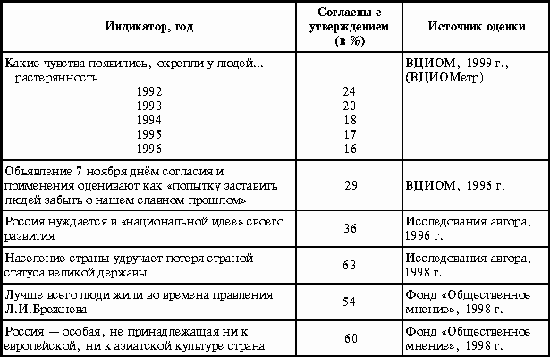 Возможны ли оценки распространённости ценностей эволюционизма и программизма? В чистом виде вряд ли. Важно другое: программистская культура в России подорвана. Явно набирает силу культура самодеятельного, неопределённостного, вариативного, многомерного эволюционного мира. Всё больше людей начинают осознавать, что лучше “оказаться... в настоящем, глубоком, страшном, непредсказуемом и неиссякаемом мире, где возможно всё: и хорошее, и плохое, нежели жить в узком, закрытом, хотя бы и тёплом помещении” (Х. Ортега-и-Гассет). 1.5. Проблема Соловьёва: миры Богочеловеческой и человекобожеской нравственности Моральное существо никогда не может освободиться от власти божественной идеи, являющейся смыслом его бытия, но от него самого зависит, носить её в сердце своём и в судьбах своих как благословение или как проклятье. В. Соловьёв Для человека верующего вопрос нравственного императива не существует: нравственные нормы не могут быть предметом обсуждения. Они сотворены Господом, они вечны и абсолютны. Собственно человеком можно быть, только признав нерукотворность нравственных норм как абсолютную волю Создателя. Неповиновение этой воле означает выход из культуры Богочеловечества, возделываемой тысячелетней историей мировых религий и следующего за этим самовозвеличения человека, который не признаёт иного Бога, кроме самого себя. Это означает создание культуры Человекобожия — антропоцентрической культуры, в которой Богом является сам человек и нормы нравственности уже сознательно им создаваемы для обслуживания сиюминутных потреб Его — человекобога. В этой культуре нравственные нормы временны, переменны. Они меняются по воле и прихоти своего создателя — человека, возомнившего себя Богом. Это делает человека неподсудным, концепция греха становится бессмысленной, как бессмысленно покаяние: если нормы нравственности легко переделать, то где критерии греховности, как различить добро и зло, осознать и понять вину и за что (и у кого) просить прощение? Переменчивость и вариативность нравственных норм делает жизнь человека легче и проще, освобождая от вериг нравственной ответственности. Одновременно это означает и примитивизацию общества. Когда утверждается, что “Бог умер, мы, в сущности, говорим, что социальные связи порвались и общество умерло. Великие... религии... явились религиями обуздания... человеческой природы” (58). В культуре человекобожия нравственные нормы перестают быть абсолютными, они становятся дифференцированными. Дифференциация может носить классовый (коммунистическая идеология) или этнический характер (фашистская идеология). Обыденным в человекобожеской культуре является оправдание дискриминации каких-либо социальных групп (детей, женщин, иноверцев). Да мало ли кто может быть объявлен недочеловеками, на которых не распространяются нормы, созданные в интересах особой группой объявляемых вне морали людей! Общества человекобожеской культуры всегда возникают для сотворения нового земного и рукотворного рая. Для этого требуются сверхнапряжения, возможные только через эксплуатацию человеческой гордыни, освобождение от уз консервативной нравственности Богочеловеческой культуры (“Если Бога нет, то всё дозволено” — полагал Ф.М. Достоевский). Очевидно, что человекобожество непременно ведет к диктатуре: она есть атеистическая религия, в которой место Бога занимает новый мессия, земной Бог (пролетариат ли как класс, предназначенный к свершению освободительной миссии, персона ли вождя, это уже не важно) (59). Свобода в культуре человекобожества никому не нужна. Она не востребована. Люди сами отказываются от неё, преклоняясь рукотворным, ими же сотворённым, Богам. Десятилетия жизни в мире человекобожеской культуры воинствующего атеизма не прошли даром. Социализм — это и есть культура уничтожения классической нравственности, взращиваемой мировыми религиями. Более 100 лет назад В. Соловьёв в своём “Оправдании добра” говорил, что процесс сотворения “человеческой жизни должен быть Богочеловеческим, а не человекобожеским” (60). 70-летний путь народа в пучине человекобожеской культуры не мог творить человеческую жизнь — он её уничтожал. И физически и духовно. В результате появился особый человеческий тип, социализированный в обстановке агрессивного атеизма, неспособный к покаянию, не понимающий, в чём его грех и вина, не знающий абсолютных и вечных норм различия добра и зла. Это — потерянный человек, лишённый связи с вечностью, обречённый на материалистическую смерть и переставший быть человеком. Мудрый С.Л. Франк так определил человека: “Признаком человека является... его сверхчеловеческая, богочеловеческая природа. Человек не только знает Бога, причём это знание... есть его существенный отличительный признак... но это знание есть... присутствие Бога в нём самом; человек сознаёт Бога в самом себе, смотрит на себя как бы глазами Бога и подчиняет... свою ��олю действующей в нём воле Бога. Это подчинение... определяет человеческую жизнь...” (61). Вне культуры Богочеловечества человек умирает. Со смертью Бога в человеке умирает и человек. Фундаментальной ценностью эсхатологической культуры является потребность в исповедальном покаянии. Без этого нет очищения, нет жизни. Покаяние нужно людям, стремящимся освободиться от тяжести грехопадения. Вот уже более 10 лет Россия не может подняться, избавить себя от тяжких цепей прошлого. Многочисленные светские комиссии по реабилитации лицемерны. Одни, по мнению комиссионеров, заслужили прощения, другие — нет. Кто же помолится за крестьян Тамбовщины, за всех погибших в гражданской войне, за всех — и красных и белых? Кто помолится за погибших в октябре 1993 г.? За наших мальчиков, убитых в Чечне? За убитых чеченских детей, женщин, стариков? Мы виновны перед ними. Мы все. Г. Померанц однажды остроумно заявил, что человек должен быть мужчиной по отношению к власти и женщиной по отношению к Богу (62). В России — всё наоборот. Мы — мужчины по отношению к Богу (мы — выше Бога, мы — человекобоги, мы— хозяева Мира, мы — покорители, мы — демиурги) и женщины — по отношению к власти. Вот власть и показывает нам свою волю. Это означает, что все, что было страшное в прошлом, может повториться. Мы всё ещё не приняли вину прошлого, всё ещё не покаялись, всё ещё думаем, что мы без греха... Крушение идеологии воинствующего материализма изменило мировоззренческие ориентиры граждан России. Социологи фиксируют рост религиозности (табл. 6). Таблица 6 Динамика религиозности в России (в %) (*13)
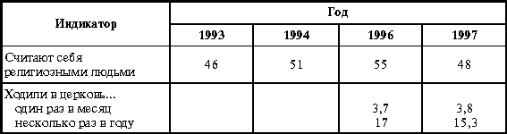 Уровень религиозности высок: около половины взрослого населения страны в религиозной культуре ищет смысложизненные опоры, явно демонстрируя отход от освоенных в школе материалистических схем объяснения мироустройства. Однако декларация религиозности — одно, а жизнь в Боге — другое. По-видимому, верующих людей не так и много: всего 4 % людей ходят в церковь ежемесячно, только 15 % заявили, что прочитали Библию или Коран и 10 % смогли продемонстрировать знание священных книг, молитв и правил религиозного поведения, обрядов. Можно оценить численность верующих людей в 4 —10 %. Остальные, считающие себя религиозными, это только ищущие свою дорогу к Храму. Служители Церкви должны бы помочь им: принять, объяснить, исповедовать, обучить, не попрекать прошлой жизнью без Бога. Люди потянулись к Богу, мучительно осваивая новую для себя Богочеловеческую культуру. Это тяжёлая и необычная для материалиста культура. Вот последняя весть: опрос, выполненный радиостанцией “Эхо Москвы” (опрошены 1 971 человек) об отношении к поступку американского врача Д. Кеворкяна, “помогавшего” смертельно больным людям уйти из жизни, показал, что его действия одобряют 83 % и только 17 % осуждают (63). Вот вам и оценка соотношения культур Богочеловеческого и человекобожеского в нашем Отечестве! Для человека Богочеловеческой культуры эвтаназия недопустима. 2. Социодинамика российской драмы В оценках сложившихся социальных реальностей мы исходим из того, что первопричина социального кризиса лежит в самих людях.Кризис умов и душ наших сограждан — это причина всех социальных напряжений в государстве, экономике, политике, семьях. Мы, народ российский, и есть интегральная боль России. Социодиагностика этого кризиса в России, выполненная нами, сводится к следующим утверждениям. 1. Сильно проявление примитивных охлократических взаимодействий. Это проявляется в криминальности сознания и поведения, преступности, аморализме и безнравственности: не закон, разум и мораль преимущественно определяют поведение людей, а инстинкты, вырвавшиеся из-под социального и морального контроля. Распространяется субкультура криминального мира. Высоки в обществе ощущения страха, неуверенности, потерянности и бессмысленности жизни.Общество в этих условиях готово принять сильного человека, хозяина, вождя —“спасителя страны и нации”. Старые лидеры сложившейся политической элиты вызывают раздражение. России нужен новый Герой, его ищут. 2. Развивается и закрепляется мозаичный, несистемный тип культуры, основанной на слухах, но не на знаниях. Тотальным является “когнитивный вакуум”. Власть полностью устранилась от объяснения с народом, стала непонятной, а поэтому пугающе опасной. Мозаичность культуры — это внушаемость, манипулируемость и мифологичность сознания и иррациональность поведения. Мозаичная культура — это депрофессионализация и невозможность переобучения. Это — дезадаптация и маргинализация, это — мистификация, демагогия и ложь. Мозаичная культура — это мир зазеркалья, мир мифов, виртуальный мир Оруэлла, где нет людей со своим мнением, а есть мнение вождей или группы политиканов, выдаваемое за общественное. В мозаичной культуре образованность — это излишество. 3. Доминируют ценности утилитаризма и экономического детерминизма, зависимости человека от внешних обстоятельств. Он по-прежнему не субъект, а объект политики. Власть же вспоминает о народе только перед выборами. Для неё народ — это электорат. Она демонстрирует технократический экстремизм в своём “строительстве” рыночной экономики, демократии, которые, по их расчётам, породят рыночного и демократического человека.В России социальные обстоятельства делают человека и обусловливают его личностные качества, но не, наоборот, качества человека предопределяют качество жизни и характер социальных институтов. 4. Нарастают ценности эволюционного мира. Но осваиваются они не как культура свободного и открытого общества, а как результат неспособности государства дать народу программу созидания (строительства) нового общества. От этого жизнь становится непонятной, страшной и бессмысленной, лишённой какой-либо цели. Одновременно с этим эволюционизм воспринимается как упование, что всё само-собой “рассосётся”, что “невидимая рука рынка” всё обустроит. Эволюционизм в России приобретает опасные черты разбегания, размежевания, а не конкурентности и легитимизации самых сильных идей в государственной политике через свободные выборы. 5. Доминируют ценности атеистического мира, в котором человек является творцом Бога, хозяином Природы. В этом мире оправдана аморальность.Абсолютные критерии нравственности даёт только религия. Человек может быть верующим или неверующим, это дело его совести, но если человек не признаёт вечности и нерушимости норм нравственности, он становится социально опасным, он становится нечеловеком, выпадая из общечеловеческого пространства, из мира людей. Обратим внимание на следующие обстоятельства. Первое . Система доминирующих социокультурных ценностей предопределяет социальные институты, коммуникации, социальные структуры и механизмы мобильности. Мир таков, каковы люди. Для нас это означает, что либерализм в России в настоящее время невозможен по причине неразвитости, неукоренённости ценностей либерального мира. И дело не в политике, а в ментальности российского обывателя. Покажем в табл. 7 соответствие политических доктрин социокультурным доминантам российского общества (*14). Становится ясным, что если охлократическая доминанта станет нарастать, то будущее России будет весьма неприглядным. При этом будет расти поддержка сторонников анархических, нацистских, коммунистических, охлократических политических и военно-технократических доктрин. Таблица 7 Доминирующие социокультурные ценности, политические доктрины и выражающие их политики
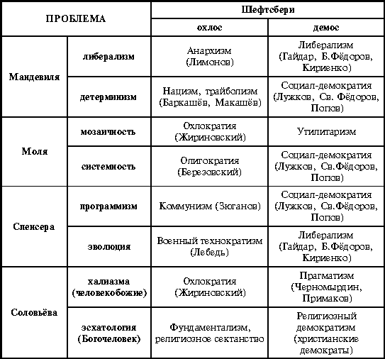 Главнейшей первоочередной задачей власти, решение которой позволяет сбить волну охлократии, является установление жесткого режима правопослушания (диктатура Закона). В этом случае усиливаются позиции социал-демократов и прагматиков (в табл. 7 эти позиции выделены). Социальная база политических партий в России в силу “когни��ивног�� вакуума”, мозаичности культуры и тотальной маргинализации не социальные статусно-ролевые группы, слои, классы, а общности с доминированием той или иной социокультурной системой ценностей. Заметим, что это означает необходимость применения социальных технологий (политик), адекватных социокультурным установкам. Либерализация охлоса привела к всплеску анархизма, преступности, подавлению отечественного производства (охлос не способен к производительному труду, он — потребитель). Гласность и упование на плюрализм возбудили идеологическое размежевание и разбегание социальных групп (дивергенцию по А. Иудину). Горбачёвское “новое мышление” обернулось потерей престижа некогда великой державы, ростом нацизма и недовольству офицерского корпуса. Борьба за права человека в охлосе вызвала расширение “зон социального бедствия” (социальное дно, беженцы, безработица и др.). Стремление к демократии обернулось утверждением олигархии. Такова цена неадекватных политик. Идеологи этих политик плохо знали и понимали страну и живущих в ней людей. Да и зачем? Есть же “объективные законы”, есть же опыт западной жизни. И вновь в России, так же, как в 1917, народ становится объектом революционной переделки. О таких политиках Иван Ильин писал: “Эти люди... ничего не понимали в России, не видели её своеобразия и национальных задач. Они решили политически изнасиловать её по схемам Западной Европы, “идеями” которой, как голодные дети, объелись и подавились. Они не знали своего отечества...” (64). Новое качество людей не учреждается спесивыми революционерами-реформаторами, а возделывается ответственными политическими элитами, через развитие образования, культуры, религий и семьи. Второе . Фиксированное состояние социокультурных доминант не является вечным. Всегда существует вероятность изменения социокультурного доминирования. Это обстоятельство даёт теоретические основания для оптимизма: Россия имеет шанс преодолеть кризис. Ценности давно забытых социокультурных миров могут приобрести популярность, а ценности, казалось бы незыблемые, вдруг теряют свою привлекательность: “Идеи рождаются как ереси, а гибнут как заблуждения” (Г. Гегель). Смена социокультурных доминант всегда проходит через социокультурную бифуркацию (*15), катастрофу, хаос. Атомизация и аномия являются обязательными спутниками такого социотрясения (по Б. Грушину). “Человечество вообще... вовсе не беспрерывно совершенствуется, не идет неуклонно по какому-то ровному и прямому пути... Напротив, оно блуждает без предуказанного пути, подымаясь на высоты и снова падая с них в бездны, и каждая эпоха живёт какой-то верой, ложность или односторонность которой потом изобличаются”, — с грустью писал в начале века С.Л. Франк (65). В этой социальной бездне народы или гибнут или находят в себе силу и волю для новой социализации и подъёма (послевоенные Германия и Япония, например, нашли в себе силы для этого). На рис. 1 приводится модель социокультурной динамики (*16). Рисунок 1 Модель социокультурной динамики: возможные направления преодоления бифуркации
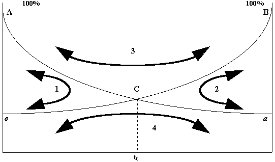 Оси ординат пятимерной модели (по количеству проблем социологии) показывают процентные доли граждан, которые придерживаются ценностей А илиВ , соответствующих социокультурным мирам, представленным в табл. 1.Состояния общества, зафиксированные на осях ординат, — устойчивые и стабильные. В этих состояниях максимально единение, солидарность обществ, которые упорядочены. Диссипация (потери) социальной энергии у них минимальна, зато максимальна социальная организованность, максимальны уровни поддержки доминирующих социальных ценностей. В этих состояниях социальные структуры устойчивы, роли социальных актёров закреплены, социальный контроль жёсткий и эффективный. Правила применения социальных санкций эффективны и строго определены. Вместе с тем в стабильных состояниях содержатся возможности их изменений. Носителями этих изменений являются социальные девианты, диссиденты, пассионарии (по Л.Н. Гумилёву). Уровень пассионарности, девиантности (в %) на рис. 1 обозначен точками “ а ” и “б ” на осях ординат. Социальные пассионарии, девианты являются в системе носителями флуктуаций (изменений). Если они интенсивны и масштабны, т. е. их влияние на устойчивость становится неслучайным, система теряет устойчивость и входит в состояние бифуркации (66).Общество из состояния А в состояниеВ проходит через хаос, неопределённость, бифуркацию (точкаС ). Состояние бифуркации — это состояние слома доминирующей системы ценностей. Здесь максимальны энтропия (мера неупорядоченности, хаотичности системы), неопределённость, индивидуальная активность. В состоянииС решающую роль играют политические случайности, действия отдельных личностей. Это время действия исторических личностей: только в этот период микросоциальные поступки (действия личности) могут иметь (и имеют) макросоциальное (для общества) значение. Это время появления исторических личностей (Жанна Д’Арк, Авраам А. Линкольн, Ф. Рузвельт, Ленин, Гитлер, Сталин, Р. Парк и все другие исторические деятели, появившиеся благодаря бифуркациям). В состоянии бифуркации социальные системы обретают новые каналы эволюции (по Н.Н. Моисееву (67)), новую траекторию социализации. В бифуркациях важнее не выход из неё, а Лидер, его предложивший. Моисей важнее, чем путь, по которому он вёл свой народ в земли Ханаана, не так ли? При бифуркациях время как естественная мера социального бытия исчезает. Его не существует. Жизнь и история останавливаются. Исчезает прошлое и не существует будущее. Время появляется только тогда, когда явно обозначаются контуры нового канала эволюции.Состояние бифуркации — это не только катастрофа, связанная со сломом старых систем ценностей, но и возможность обретения новых, более удачно социализирующих ментальную природу народа. Новый социальный порядок кристаллизируется через социальный хаос и атомизацию (68). При этом важно, что новая система необратима по отношению к своему добифуркационному состоянию и принципиально её состояние непредсказуемо в момент бифуркации. Общества в состояниях бифуркации непредсказуемы: одному Богу известна судьба России. Никто не может её знать сегодня. Случайности неповторимы... Новый порядок создаётся поведением миллионов людей, создающих антиэнтропийную силу социальной самоорганизации. С системной точки зрения бифуркация определяется высоким уровнем диссипаций — потерей (рассеиванием) энергетического потенциала. Одновременно с этим система является высокоэнтропийной: она уже не в состоянии сама производить социальную энергию. Энтропийность системы определяется потерей социально значимых идеалов, размытостью (или отсутствием вовсе) мобилизационных идеологий, спадом производств и снижением качества нации (потеря “воли к жизни” (*17), ухудшение здоровья, снижение уровня образованности). В то же время мы теряем (рассеиваем) свой интеллектуальный потенциал, способный к пассионарности и антиэнтропийной деятельности. Вот факты. В институтах РАН 53 % учёных готовы уехать из страны, если такая возможность представится (70). Ожидалось, что к 2000 г. страну покинут 1,5 млн специалистов (71). К примеру, в Институте теоретической физики штата Миннесота пять из шести профессоров — эмигранты из России. Затраты на НИОКР ныне в России в 40 раз меньше, чем в США. Все эти факты свидетельствуют о высоком уровне энтропийности российского общества, масштабах диссипации в России. Всё это — зловещие признаки бифуркации. Гигантская волна энтропийного взрыва накрыла Россию. Она на клочья разорвала изрядно подгнившую социальную ткань советского общества. Под её мощью рухнула могущественная держава. Энтропийный взрыв — это результат предшествующих десятилетий презрения человеческой природы и построения “социальных одежд”, не соответствующих ей. Однако новый режим власти и новый социальный уклад демонстрируют свою несостоятельность в обуздании энтропийной стихии. В стране останавливается производство (табл. 8), люди перестали работать, они деморализованы, их воля подавлена. Люди сами являются носителями разрушительной энтропии. Таблица 8 Показатели экономической активности в России (в % к уровню 1991 г.) (69)
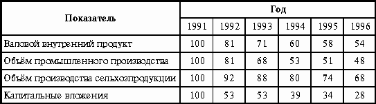 Если мы не сможем , по выражению князя А. М. Горчакова, собраться с силами, сосредоточиться, то мы погибнем. Погибнем как нация, как культура, как государство. Современная Россия — это общество социальной бифуркации, социальной катастрофы. Судьба страны в этих обстоятельствах неисповедима. Это — эпоха перемен, время неопределённости и хаоса: сегодня около 70 % населения считают, что ситуация в стране вышла из-под контроля, и только 12 % полагает, что власти контролируют ситуацию (72). Третье . Выход из состояния бифуркации возможен (см. рис. 1) по четырём вариантам (траекториям). Они для бифуркационных систем называются атракторами — притягательными состояниями, образами общественного состояния, конструируемыми общественным сознанием. Траектория 1 — это траектория реставрации бывших ранее социокультурных ценностей. В сегодняшней России это проявляется в росте пассеистических настроений (более половины граждан страны считают, что лучшее время — это время правления Л.И. Брежнева, см. табл. 5), требованиях реставрации СССР, возращении гимна СССР как государственного гимна России, усилении государственных рычагов управления, нарастании милитаризма, антиамериканизма, росте антилиберальных настроений. В главном же усиление этой траектории связано не с успехами сил оппозиции, а с бездарностью людей, правящих страной в последнее десятилетие. Они ничего не смогли предложить народу. Они не составили основу нового, ответственного сословия. Им не удалось создать социальную базу либерального реформирования, опору зарождающегося строя. Таковым мог бы быть средний класс. Средний класс — это класс высокообразованных, профессиональных, консервативных людей со средним доходом. Этот класс является естественным антиэнтропийным социальным сообществом. Он состоит из людей, умеющих и делающих, из людей дела. На рис. 2 показана трансформация социальной структуры населения России, наблюдаемая за период с 1996 г. по 1999 г. (73). Рисунок 2 Трансформация социальной структуры населения России
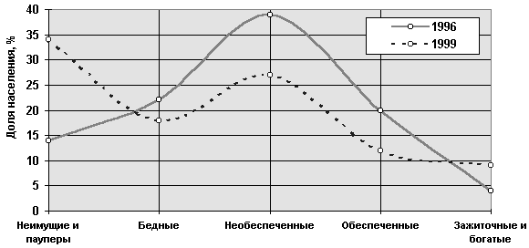 Средний красс сегодняшней России — это необеспеченные и обеспеченные семьи. Их материальное положение позволяет им сносно питаться, иметь возможности более (обеспеченные) или менее (необеспеченные) хорошо одеваться, иметь имущество, позволяющее неплохо жить в наше тяжёлое время. За три последних года средний слой уменьшился с 69 % (1996 г.) до 56 % (1999 г.). Если оценить устойчивость общества индексом, определяемым отношением суммы долей беднейших и богатых слоёв населения к доле среднего слоя, то в 1996 г. он равнялся 0,41, а в 1999 г. — 0,84. Это означает, что устойчивая часть общества уменьшилась в 2 раза. Только за это время (1996—1999 гг.) доля населения, социальный статус которого снизился, составила 32 %. Август 1998 г. стал итогом “либерального” правления, ускорившего оформление реставрационной траектории. Конечно же, реставрация догорбачёвской России невозможна. Коммунизм как доктрина также невозможен в первозданном виде. Но вполне возможны модернизации в “новых” доктринах его социокультурных оснований: детерминизма, программизма, массообразной однородности социальных общностей, патернализма. Всё это будет упаковано в “как бы новые” доктрины с новой лексикой, легко усваиваемой в мозаичной культуре. На рис. 3 показана динамика отношения населения страны к двум экономическим моделям: государственно-распределительной (“коммунистической”) и частнособственнически-рыночной (“капиталистической”) (74). Результат ошеломляет: надо же умудриться так растранжирить заряд либерального потенциала 1992—1993 гг.! Интересно, откуда лидеры блока “Правое дело” взяли оценку поддержки их движения в 61 %? Сегодня “капиталистическая” модель в 2 раза менее популярна по сравнению с “коммунистической”, в то время как в 1993 г. соотношение в пользу капиталистического пути было подавляющим: почти 1 к 12. Рисунок 3 Динамика отношения населения к экономическим моделям хозяйствования в России
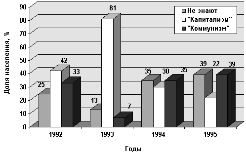 Траектория 2 — это траектория продолжения мучительного поиска путей модернизации. Она небезнадёжна. В бифуркациях есть только возможности (атракторы), но нет данностей. Эта возможность основана на накопленном опыте самостоятельной жизни, освоенных образцах поведения в неопределённом, открытом мире, требующем самостоятельных решений, поведении молодого поколения, социализированного без предписаний “единственно верного учения”. Эта возможность создаётся всё более либерализующейся, вариативной средней школой, открытостью высшей школы к восприятию передовых образцов западных вызов. Возможность модернизации — это и рост религиозности, понимания ответственности людей за судьбы своей семьи и страны. Молодые люди постсоветсткой России — это её надежда, они вряд ли согласятся с разворотом назад. Там они точно проиграют. Там мы уже были... Траектория 3 — это конфронтация, революция, гражданская война. Это траектория усугубления бифуркации, но не её преодоления. Вообще, преодолеть бифуркацию возможно, только реализовав траектории 1 и 2: эти траектории ведут к устойчивым состояниям преодоления энтропийного хаоса. Траектория роста конфронтации определяется как возможность развития бифуркации в силу следующих обстоятельств. а. За последнее десятилетие в стране резко снизился уровень жизни. Жизнь 120 млн человек ухудшилась в 3—5 раз (75). Мы можем говорить о том, что не менее 80 % населения отчётливо понизили свой жизненный уровень. Товарное изобилие потребительского рынка имеет жёсткую социальную цену: оно достигнуто за счёт снижения потребления основных продуктов питания (в натуральных измерениях) на 20—40%. Фактически по уровню потребления продуктов питания мы отброшены более чем на 20 лет назад и находимся на уровне потребления середины 70-х годов. Совершенно недоступны в 1997 г. были, например, покупки автомобилей для 77 % семей, квартиры — для 86 %, мебели — для 63 %, посещение ресторана — для 72 % (76). б. Быстро нарастает социальное неравенство, образуя (см. рис. 2) противостоящие друг другу слои зажиточных богатых (8 % населения) и бедных граждан (51 % населения). При этом стремительно разрастается социальное дно (самая обездоленная и униженная часть общества), состоящее из 14 млн человек. Децильный коэффициент дифференциации (отношение доходов 10 % богатых граждан и доходов 10 % беднейших граждан) с 1992 г. увеличился с 7,3 до 15,0 (по другим оценкам до 20,4), т. е. в 2—3 раза. В октябре 1996 г. в исследовании денежных доходов и сбережений, проведённом Институтом социально-экономических проблем народонаселения РАН, не удалось рассчитать децильные коэффициенты дифференциации для ряда регионов России потому, что доходы беднейших 10 % населения равнялись нулю, например в Рязанской и Ульяновской областях. В Иркутской он был равен 30,9, а в Калмыкии официальная статистика фиксировала его на уровне больше чем 40. Ни в одной из восточно-европейских стран не наблюдается такого быстрого расслоения. В результате формируются два мира, две России со своими социокультурными ценностями, образами жизни и образцами поведения (культурами): мир богатейшего и состоятельного сословия и мир беднейших (аутсайдеров), официально называемых в электоральных кампаниях неудачниками. Система образования России играет крайне неприглядную роль акселератора социального расслоения. Доступ к образовательным ресурсам у различных социальных групп неодинаков. Образование становится роскошью для социальных аутсайдеров. Так, среди студентов российских вузов, 42 % — это выходцы из экономически успешных семей 32 % социального верха, а 58 % — это выходцы из семей 68 % социального низа (77). Ныне система образования представлена двумя качественно разными секторами, работающими с “наследными принцами и наследными нищими��� (выражение Д. Ко��стантиновского). Демократия и нищета подавляющей части населения несовместимы. в. Высоким является уровень протестного поведения. В табл. 3 показана динамика протестности в России. В настоящее время около 9 % населения заявляют, что готовы защищать свои интересы “с оружием в руках” (78). Можно только предположить, что протестное поведение усилилось после августовской катастрофы 1998 г. Крайней формой социального протеста являются революции. Не надо успокаивать себя тем, что в России выработался революционный иммунитет, что страна исчерпала “лимит революций”. Бифуркации — это состояния, не помнящие прошлого (это системы без памяти), здесь жизнь (или смерть) создаются заново... Одной из современных теорий революции является модель Д. Девиса и Т. Гурра, связывающая революционный катаклизм с депривацией, — разрывом между возможностью людей обеспечить себе определённый уровень жизни и достойным (заслуживаемым ими) для них уровнем жизни (79). Революция — это реакция на несправедливость лишений. На рис. 4 показано развитие депривации в России с 1989 г. (данные мониторинга агентства “Проконтакт”, руководитель А.А. Овсянников). Рисунок 4 Развитие депривации в России
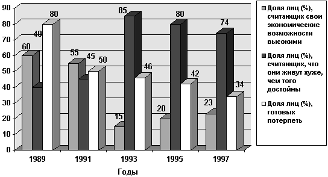 Ситуация, зафиксированная на рис. 4, определяется авторами депривационной теории революций как “революция крушения прогресса”. В этом случае одновременно снижается уровень экономических возможностей (в 3 раза уменьшилось число людей, считающих высокими свои экономические возможности) и резко возрастает уровень притязаний (почти в 2 раза увеличилась доля тех, кто считают, что достойны лучшей жизни). Самая тяжёлая ситуация была в 1993 г., но она компенсировалась высокой готовностью “потерпеть”. Сейчас и этот стабилизирующий ресурс исчерпал себя. Похоже, в России складывается ситуация, опасная новым революционным взрывом. Революция не является выходом из бифуркации. Она только усиливает энтропийные явления, “обращая людей в беснующиеся орды сумасшедших” у которых “одёжки цивилизованного поведения мгновенно срываются, и на смену социума на волю выпускаются “бестии”” (80). Революции никогда не решают проблем общества. После них всегда возобновляются поиски каналов преодоления энтропийного взрыва и новой устойчивости. Траектория 4 — это нарастание анемии. По Э. Дюркгейму (81) — это нормативный вакуум, ослабление регулирующей роли социальных и нравственных норм. Аномия является обязательным спутником бифуркации. В России аномия проявляет себя следующим образом. а. Прежде всего аномия — это потеря социальных ориентиров, образов будущего и социальных перспектив. Жизнь в России всё в большей степени соответствует циничному определению материалистов: “Жизнь — это форма существования белковых тел”. В 1998 г. в России 76 % населения (82) определяли свою жизненную задачу как “выжить” и “жить не хуже других”, что с ухудшением жизни “других” и означает “выжить”: в 1998 г. с января по ноябрь доля тех, кто считали, что “всё не так плохо”, сократилась с 10 % до 5 %, а доля тех, кто считают, что “терпеть бедственное положение невозможно”, выросла с 40 % до 51 %. При этом постоянно растёт доля тех, кто считают, что “будет ещё хуже”: в 1994 г. таковых было 38 %, 1995 г. — 34 %, 1996 г. — 41 %, 1997 г. — 45 %, 1998 г. — 67 % (*18). В социологии известен закон У. Томаса (закон социального предвидения): “Если люди определяют ситуации как действительные, то они действительны по своим последствиям”. Иначе говоря, если некоторые социальные образы существуют как ожидания, то завтра эти образы могут стать реальностями. Это означает, что образы, ощущения будущего, ожидания и надежда влияют на сегодняшнее положений вещей иногда в большей мере, чем прошлое. Более того, будущее формируется, конструируется нашими представлениями о нём. Они мрачны, пессимистичны, катастрофичны. Власть безмолвствует, не пытаясь объясниться с людьми, показать позитивный образ будущего общества, дать социально значимый идеал. Социальная роль политики — разработка системы идей, идеалов, идеологий. Без этого политика становится политиканством. Люди не выносят идеологической пустоты, заполняя её мифами... Ф.М. Достоевский так рассуждал по этому поводу: “Почему же мы дрянь? Великого нет ничего... Замечу Вам, что... без идеалов, то есть без определённых хоть сколько-нибудь желаний лучшего, никогда не может получиться никакой хорошей действительности. Даже можно сказать положительно, что ничего не будет, кроме ещё пущей мерзости” (83). Аномия — это социальный вакуум, идеологическое бездорожье, политиканствующие дрязги. Аномия всегда означает отсутствие образов будущего, что означает и потерю будущего. Смута. Тоска. б. Аномия — это потеря воли к жизни. Она проявляет себя прежде всего в росте смертности и снижении деторождаемости. По расчётам И. Гундарева избыточная (по отношению к уровню 1986 г.) смертность в России за 1987—1994 гг. составила более 2 млн человек. Смертность за эти годы увеличилась в 1,8 раза и составила 15,8 случаев на 1 000 человек в год (в 1986 г. — 9,2 случая). Одновременно с этим в России в 1,9 раза снизилась рождаемость. В 1994 г. она составляла 9,5 младенцев на 1 000 человек. Если уровень рождаемости в 1986 г. рассматривать как “нормальный”, то население России за 1987—1994 гг. потеряло от сверхнормального снижения рождаемости не менее 5 млн человек (84). Резко сократилась за последнее десятилетие продолжительность жизни. Достигнув в 1987 г. высокого уровня (65 лет у мужчин и 75 лет у женщин), в 1993 г. она снизилась до 59 лет у мужчин и до 72 лет у женщин. Потеря воли к жизни проявляется и в росте самоубийств. Их масштабы потрясают: с 1994 г. ежегодно стали убивать себя более 60 тыс. человек. Ежегодно от суицида в России исчезает население, равное по численности среднего по размеру города. Самоубийств в 1990 г. было в 2 раза больше, чем убийств, сегодня уровень самоубийств выше уровня убийств на треть. Динамика суицида приведена на рис. 5. Рисунок 5 Динамика самоубийств в России в 1986—1995 гг. (количество случаев на 10 тыс. населения)
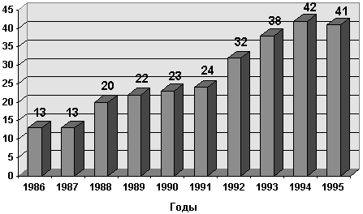 Самая тяжёлая суицидальная ситуация (в 1,5 раза выше, чем в среднем по стране) сложилась в Сибири, северных регионах страны, на Урале, Дальнем Востоке. в. Аномия — это стремление уйти из реальности. Формами такого ухода являются пьянство и наркомания. В России потребление спиртного составляет (с учётом самогоноварения) 14—15 литров чистого алкоголя в год на душу населения. Это — самый высокий в мире уровень потребления алкоголя (85). Так, как ныне, в России ещё никогда не пили. По оценкам Всемирной организации здравоохранения, опасным считается уровень подушевого потребления алкоголя, равный 8 литрам. Превышение его означает физическую деградацию населения, связанную со смертностью от злоупотребления алкоголем, ростом числа “пьяных” детей, рождённых алкоголиками. Медики фиксируют, что сегодня каждый 25-й ребёнок при рождении имеет патологии центральной нервной системы, включая такие, как олигофрению, болезнь Дауна и другие тяжёлые формы (86). По оценкам “Фонда общественного мнения”, в России 80 % граждан живут в культуре, в которой употребление алкоголя — норма. При этом 23 % определяют своё окружение как окружение алкоголиков и сильно пьющих людей. Пьянство — это норма жизни для кадровых военных, рабочих, руководителей всех рангов, предпринимателей (87). Последнее десятилетие является и временем стремительного роста наркомании. По оценкам МВД, в 1995 г. в России было 1,5 млн наркоманов, число которых ежегодно увеличивается на 130 тыс. человек (6—7 %). Наркотики употребляют в каждом классе три-четыре школьника (88). * * * Сегодня никто не может сказать, каким будет новый порядок, хватит ли у нации жизненных сил, способна ли она на ��овый всплеск созида��ельной пассионарности, кто будет российским Моисеем, выведшим народ из пустыни бифуркационной темноты. Заключение Вновь наступили судьбоносные годы, вновь на карту поставлено всё. И в этом нет преувеличений. Мы — народ российский — и есть Россия. Нам и выбирать. Можно только посочувствовать тем, кто будут персонально составлять власть. Власть для ответственного политика — это тяжкий крест, но не медаль за победу в электоральной гонке. Ответственный политик понимает, что страна изнемогает и разрушается в энтропийной стихии социальной атомизации. Следовательно, надо обернуть приоритеты политики внутрь. Мир подождёт, России надо сосредоточиться. Чудес в нашем мире не бывает. Пока сами не начнём работать, богатства в доме не прибавится. Значит, надо создать условия для работы. Здесь общество поддержит действия власти по установлению Диктатуры Закона. Охлос надо укротить через обуздание его криминальности. Вор, взяточник, мошенник, казнокрад должны сидеть в тюрьме. Производительный труд — это труд образованного человека. Надо сделать образование тотальным. Должно стать всеобщим и обязательным общее среднее образование. Стране выгоднее учить детей, чем содержать их в лагерях. Особо надо подойти к переобучению взрослых. Структурные изменения экономики неизбежны, людей надо учить новым профессиям. Потребуется создание федеральной системы маркетинга рынка труда. Для этого придётся разобраться с собственниками, надо, наконец, подвести итоги приватизации. На законных основаниях пересмотреть их. Собственность должна работать. Начнёт двигаться производство (не надо бояться слов “программа”, “план”) — появятся доходы у людей. Здесь центральная задача — отечественный производитель. Почему, например, мы покупаем плохие автобусы в Венгрии, а наши автобусные заводы стоят? На бюджетные деньги покупаем... Начнёт расти производство, начнут расти доходы людей. Появится налогоплательщик, появятся деньги в бюджете. Да, надо решительно изменить систему налогообложения. Скаредность государства убивает налогоплательщика, стимулируя теневую, криминальную экономику. В поощрительном налогообложении особенно нуждается мелкий бизнес. Экономическое оживление будет стимулировать спрос на наукоёмкие и эффективные технологии. Возбудится спрос на высококвалифицированный труд, НИОКР. Появится спрос на “длинные деньги”, банки станут по-настоящему кредитно-инвестиционными заведениями. Ещё раз — здесь главное защитить их собственность, ввести жёсткие гарантии, обеспечивающие инвестиционную безопасность. Как своим, так и иностранным инвесторам. Государство должно быть сильным. Его сила не в преданных начальству чиновниках, а в умных. Нужна система конкурсов на государственные должности. Нужна современная система государственной пропаганды. Но для этого нужна государственная идеология, которая и будет основой государственной политики. Эта идеология основывается на ценностях законности, добросовестного труда, личной ответственности, солидарности, незыблемости личной свободы и гражданских прав, патриотизма и национализма. Новая власть обязана вести диалог с народом, создавая современную РR-систему. Для этого претенденты на государственную власть должны обозначить свои цели, свою развёрнутую программу деятельности, должны объяснять её людям. Россия не сможет сосредоточиться, если ей не поможет Церковь. В Троице-Сергиевом монастыре есть памятник деяниям Церкви. Они связаны с “лихими” годами жизни: татаро-монгольское нашествие, Смутное время... Религиозное просвещение — это дело не только Церквей, традиционных для России. Это жизненная необходимость для народа, жаждущего покаяния... Мы не имеем права на новые и новые ошибки. Сегодня нужны не говорливые, а умелые. Не обещающие, а сделавшие. Не показывающие, как делать, а берущиеся за работу и делающие её. Самой болезненной проблемой России, её болью и болезнью являемся мы все, составляющие её народ. Сможем измениться мы — изменится и Россия. Через столетия доходит едва слышный голос великого русского писателя: “Я всего только хотел бы, чтоб все мы стали немного получше. Желание самое скромное, но, увы, и самое идеальное”. ПРИМЕЧАНИЯ 1.Ахиезер А. Об особенностях современного философствования. Вопр. философии, 1995. №12. 2.Достоевский Ф. Дневники писателя. М., 1989. С. 145. 3.Бауман З. Философские связи и влечения постмодернистской социологии // Вопр. социологии. 1992. Т. 1. № 2. 4.Лебон Г. Психология народов и масс. СПб., 1995. 5.Shils E. Traditions. Chicago, 1981. P. 332. 6. Энциклопедический социологический словарь. М., 1995. 7.Гоббс Т.О гражданине. М., 1989. Т. 1. С. 279—280. 8.Он же.Указ. соч. С. 330. 9.Куликов Л. Россия: прошлое, настоящее и будущее. М., 1995; Овсянников А.Власть тьмы // Новый мир. 1998. № 8. 10.Вебер М. Протестанская этика и дух капитализма: Избр. произв. М., 1990. 11.Дюркгейм Э. О разделении общественного труда. Одесса. 1900. С. 102. 12.Поппер К. Открытое общество и его враги. М., 1992. 13.Мильнер Б. Доверие — ключ к успеху экономических реформ. М., 1998. 14.Серебрянников В., Хлопьев А. Социальная безопасность России. М., 1996. С. 96. 15. Сегодня. 1999. 17 февр. 16. Там же. 1999. 16 марта. 17. Там же. 1999. 11 марта. 18.Достоевский Ф. Указ соч. С. 100. 19.Дилигенский Г. Российский горожанин конца девяностых: генезис постсоветского сознания. М., 1998. 20.Платон. Соч.: В Т. 3. С. 377, 381. 21.Достоевский Ф. Бесы. М., Т. 10. 1974. С. 324. 22. См.: Мониторинг общественного мнения. 1998. № 6. С. 48. 23. Литературная газета. 1997. 12 марта. 24. Сегодня. 1999. 30 янв. 25.Поппер К. Открытое общество и его враги. М., 1992. С. 112. 26.Вебер М. Протестантская этика и дух капитализма. М., 1990; Зомбарт В.Буржуа. М., 1924; Печчеи А.Человеческие качества. М., 1974. 27.Мау В.Сто шестое место экономической свободы // Итоги. 1999. 16 февр. 28.Андриенкова А. Материалистические и постматериалистические ценности в России // Социс. 1994. № 11. 29.Ingelhart R. Cultural shift in advanced industrial societies. Princeton, 1990. 30.Герцен. А. Письма старому товарищу. Собр. соч. М., 1960. 31.Моль А. Социодинамика культуры. М., 1973. С.45. 32.Ясперс К. Истоки истории и её цель. М., 1991. С.199. 33. Совершенно секретно. 1995. № 7. 34. Советская Россия. 1996. 30 июля. 35.Солженицын А. Образованщина // Новый мир. 1991. № 5. С. 35,39,40. 36. Роль отечественной интеллигенции / Рук. А.А. Овсянников, А.А. Иудин. М.,1993. 37. Сегодня. 1995. 28 марта. 38.Солженицын А. Указ. соч. С. 35,39,40. 39.Вовенарг Л. Размышления и максимы. Л., 1988. 40.Зомбарт В. Указ. соч. С. 97. 41. Цит. по: От Ельцина к Ельцину. М., 1997. С. 604. 42. Ортега-и-Гассет Х. Восстание масс // Вопр. философии. 1989. № 3. С. 120. 43.Овсянников А., Римашевская Н., Иудин А.Социальное дно. М., 1996. 44.Солженицын А. Архипелаг ГУЛАГ. М., 1994. 45.Овсянников А.А. Социодинамика реформ высшей школы. М., 1999. 46.Лихачёв Д. Черты первобытного примитивизма воровской речи // Словарь тюремно-лагерно-блатного жаргона. М., 1992. 47. Опыт словаря нового мышления / Под общ. ред. Ю. Афанасьева и М. Ферро. М., 1989. С. 146. 48. Сегодня. 1999. 14 апр. 49.Достоевский Ф. Дневник писателя. М., 1989. С. 101. 50.Минкин А. Прощай умытая Россия // Новая газета. 1998. 2 ноября. 51. Бельков О. “Веймарская” Россия: феномен или фантом // Власть. 1999. № 2. 52. Проекты “Русские в СССР” (1990) и “Русские в России” (1992) / Рук. А.А. Овсянников. 53. ВЦИОМетр: спецвыпуск 1988—1998 гг. 54.Шпенглер О. Закат Европы. Пг., 1923. С. 22. 55. Там же. С. 23. 56.Хайек Ф. Пагубная самонадеянность. М., 1992. С. 48. 57.Сорокин П.А. Современное состояние России // Новый мир. 1992. № 6, 7. 58.Белл Д. Культурные противоречия капитализма // Этическая мысль. М., 1990. 59.Булгаков С.Н. Апокалиптика, социология, философия истории, социализм // Русская мысль. 1910. № 7. С. 20. 60.Соловьёв В.С. Оправдание добра. Минск, 1999. С. 865. 61.Франк С.Л. Духовные основы общества. М., 1992. С. 77. 62. Цит. по: Очерки социальной философии. М., 1994. С. 206. 63. Сегодня. 1999. 15 апр. 64.Ильин И. Русская революция была катастрофой // Наши задачи. М.,1992. С.107. 65.Франк С.А. Крушение кумиров. Берлин, 1924. С. 42. 66. См.: Концепции самоорганизации: становление нового образа научного мышления. М., 1994. С. 30, 110. 67.Моисеев Н. Ещё раз о проблеме коэволюции // Экология и жизнь. 1998. №2. 68.Пригожин И., Стенгерс И.Порядок из хаоса. М., 1986; Курдюмов С., Малинецкий Г., Потапов А.Синергетика — новые направления. М., 1989. 69. См.: Народное хозяйство РСФСР в 1990 г. С. 12, 429; Данные за 1996 г. взяты из “Экономического журнала”. 1997. № 7. 70.Морозова Г. Деградация нации миф или реальность? // СоЦИС, 1994. № 1. 71. Доклад Президенту страны о состоянии высшей школы / Комитет по делам высшей школы, 1992. 72. Литературная газета. 1997. 12 марта. 73. Использованы данные по проектам “Социальное дно” (рук. Н.М. Римашевская, А.А. Овсянников, А.А. Иудин), 1996 г.; “Учитель как представитель среднего класса” (рук. А.А. Овсянников и А.А. Иудин). Выборки поселенческие, репрезентативные для всего населения России. 74.Косалс Л., Рывкина Р., Симагин Ю.Рыночные реформы глазами разных поколений // Мировая экономика и международные отношения. 1996. № 7. С. 136. 75.Серебрянников В., Хлопьев А.Социальная безопасность России. М., 1996. С. 213. 76. Исследование по проекту “Социальное дно”. 1996. 77.Овсянников А. Социодинамика реформ высшей школы. М., 1999. 78.Серебрянников В., Хлопьев А. Социальная безопасность России. М., 1996. С. 277. 79.Штомпка П. Социология социальных изменений. М., 1996. С. 380. 80.Сорокин П. Человек и общество в условиях бедствия // Вопр. социологии. 1993. № 3. 81.Дюркгейм Э. Самоубийство. СПб, 1912. 82. ВЦИОМетр. М., 1988. 83.Достоевский Ф. Дневник писателя. С. 22, 179. 84.Гундарев И. Парадоксы российских реформ. М.,1997. 85.Галкин В. Пьющая республика // Сегодня. 1995. 31 марта. 86. Московский комсомолец. 1999. 25 марта. 87. Сегодня. 1995. 11 янв. 88. Гудок. 1997. 18 марта. Сноски *1. Пассеизм — пристрастие к прошлому, любование им при внешне безразличном, а на деле враждебном отношении к настоящему (Словарь иностранных слов. М., 1985). *2. В этом смысле разницы между экстремистом-большевиком прошлого и сегодняшним радикалом-демократом нет никакой. “Чубайс — это Ленин сегодня”, не так ли? *3. Очевидно, что в реальном обществе мы будем фиксировать смесь социокультурных ценностей различных социокультурных доминант. Теоретически возможны 32 таких социальных образования, 32 социокультурных типа обществ (2 в 5-й степени). *4. К таковым относятся инстинкты выживания, размножения (половой), сохранения рода (родительский), любознательности, самоорганизации и собственности. См.: Дольник В.Р. Вышли мы все из природы. М., 1996. *5. Данные консалтингового агентства “Проконтакт” (рук. А. А. Овсянников). *6. См.: данные ВЦИОМ // Мониторинг общественного мнения. 1998. № 6. *7. Н.А. Бердяев пишет о русской идее как эсхатологической идее: “Отсюда русский максимализм... стремление ко всеобщему спасению... Русская идея носит соборный характер. Христиане Запада не знают такой коммюнетарности, которая свойственна русским” (Русская идея // Вопр. философии. 1990. № 2. С. 152). “На природной коммюнетарности и мессианстве русских марксизм привёл к тому, что человек истребляется во имя чего-то призрачно сверхчеловеческого... Пролетариат выше человека... — он новый Бог. Сверхчеловеческое неизбежно восстаёт на развалинах гуманизма” (Смысл творчества. М., 1989. С. 322). *8. Национальная самобытность ничего общего не имеет с шовинизмом и фашизмом. Это — признание национальных особенностей и национальной идентичности. Если бы слово “национализм” не носило жесткого политического смысла, то национальную самобытность можно было бы обозначить как культурный национализм. *9. Интернационализм решает проблему наций, просто устраняя ее. Доминирующим в пролетарском интернационализме является отношение классов. В космополитизме (как разновидности интернационализма) доминирующими являются общечеловеческие ценности мировой цивилизации. В ней люди— граждане мира, они становятся вне национальных культур, создавая свою глобальную интеркультуру. *10. Да их русскими и не называют, впрочем, как и другие народы страны. Правители придумали заменитель слову “советский народ” — россияне. Кто это? Это какой-то национальный гибрид, национальный гермафродит. *11. Запад рассматривает Россию как культурную провинцию, периферию, проводя по отношению к ней политику культурной гомогенизации (по Ганнерсу). Она предполагает полное доминирование западной культуры. В религиозной жизни эта политика принимает форму прозелетизма. *12. У М. Харитонова есть рассказ, герой которого Лизавин занимался в своей деревне бегом на короткие дистанции. Секундомера у него не было, и он отсчитывал время в уме. Однажды он показал результат, превышающий мировой рекорд. Лизавин был абсолютно уверен, что он — мировой рекордсмен. *13. Данные ВЦИОМа. *14. Основополагающим (системным) в этой модели является разделение на охлос и демос по проблеме Шефтсбери. *15. Бифуркация — раздвоение, разделение чего-либо; состояние качественных изменений системы через самоорганизацию и новую социализацию. *16. Стрелками показаны траектории выхода из состояния бифуркации. Из точки бифуркации возможен только один выход, одна траектория динамики. *17. Потеря воли к жизни определяется, в частности, нежеланием иметь детей. В 1993 г., по данным единовременного обследования Госкомстата РФ, 73,4 % молодых семей не хотели иметь детей. Об этом говорит и статистика абортов. До 1993 г. в России производилось около 4 млн абортов в год. С 1994 г. их количество увеличилось и составляет 6 млн и более в год (это равно населению Швейцарии). *18. Данные службы “Мнения” (рук. Г. Пашков). |